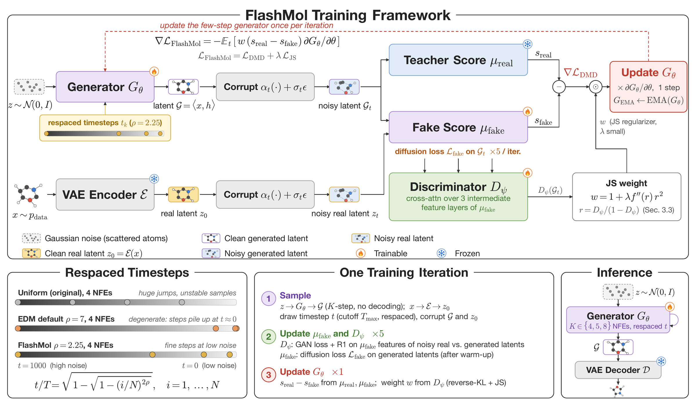

<title>FlashMol</title>
<link rel="preconnect" href="https://fonts.googleapis.com">
<link rel="preconnect" href="https://fonts.gstatic.com" crossorigin>
<link rel="stylesheet" href="https://fonts.googleapis.com/css2?family=IBM+Plex+Mono:wght@400;500;600&family=IBM+Plex+Sans+Condensed:wght@500;600;700&family=Source+Serif+4:opsz,wght@8..60,400;8..60,600&display=swap">
<style>
/* Layout: one linear narrative on a single wide 1180px column shared by the title
   block, the prose, the figures, the tables and the 3D gallery, under a sticky
   contents bar. */
:root {
  --bg: #f5f7f9;
  --surface: #ffffff;
  --surface-2: #e9edf3;
  --fg: #111621;
  --muted: #58627a;
  --line: #d9e0e9;
  --line-strong: #bcc6d4;
  --accent: #2443c4;
  --accent-quiet: #e5e9fa;
  --on-accent: #ffffff;
  --warm: #bb3524;
  --ok: #0f7351;

  --f-display: "IBM Plex Sans Condensed", "Helvetica Neue", Arial, sans-serif;
  --f-body: "Source Serif 4", Georgia, "Times New Roman", serif;
  --f-mono: "IBM Plex Mono", ui-monospace, "SF Mono", Menlo, monospace;

  --col: 1180px;
  --r: 3px;
  --navh: 44px;
}
@media (prefers-color-scheme: dark) {
  :root:not([data-theme="light"]) {
    --bg: #090c12;
    --surface: #111722;
    --surface-2: #1a212e;
    --fg: #e8edf6;
    --muted: #97a2b8;
    --line: #222b3a;
    --line-strong: #374255;
    --accent: #8ca7ff;
    --accent-quiet: #192444;
    --on-accent: #0a0d13;
    --warm: #ff8878;
    --ok: #45cea1;
    color-scheme: dark;
  }
}
:root[data-theme="dark"] {
  --bg: #090c12;
  --surface: #111722;
  --surface-2: #1a212e;
  --fg: #e8edf6;
  --muted: #97a2b8;
  --line: #222b3a;
  --line-strong: #374255;
  --accent: #8ca7ff;
  --accent-quiet: #192444;
  --on-accent: #0a0d13;
  --warm: #ff8878;
  --ok: #45cea1;
  color-scheme: dark;
}

* { box-sizing: border-box; }
body {
  background: var(--bg);
  color: var(--fg);
  font-family: var(--f-body);
  font-size: 17px;
  line-height: 1.7;
  -webkit-font-smoothing: antialiased;
}
.wrap { max-width: var(--col); margin: 0 auto; padding-inline: 20px; }
.bleed { max-width: 1180px; margin: 0 auto; padding-inline: 20px; }

h1, h2, h3, h4, .dsp { font-family: var(--f-display); text-wrap: balance; }
h1 { font-size: clamp(2.1rem, 6.4vw, 3.3rem); line-height: 1.06; margin: 0 0 .5rem; font-weight: 700; letter-spacing: -.015em; }
h2 { font-size: clamp(1.5rem, 3.6vw, 2rem); line-height: 1.12; margin: 0 0 .2rem; font-weight: 700; letter-spacing: -.01em; }
h3 { font-size: 1.18rem; line-height: 1.24; margin: 1.7rem 0 .4rem; font-weight: 600; }
h4 { font-size: 1.02rem; line-height: 1.3; margin: 0 0 .3rem; font-weight: 600; }
p { margin: 0 0 .85rem; }
a { color: var(--accent); text-decoration-thickness: 1px; text-underline-offset: 2px; }
:focus-visible { outline: 2px solid var(--accent); outline-offset: 2px; border-radius: 2px; }
code, .mono { font-family: var(--f-mono); font-size: .875em; }

.eyebrow {
  font-family: var(--f-mono); font-size: .685rem; font-weight: 500;
  letter-spacing: .14em; text-transform: uppercase; color: var(--muted);
}

/* ---------- sticky contents bar ---------- */
.nav {
  position: sticky; top: env(safe-area-inset-top, 0px); z-index: 20;
  background: var(--bg);
  background: color-mix(in srgb, var(--bg) 92%, transparent);
  backdrop-filter: blur(8px);
  border-bottom: 1px solid var(--line);
}
.nav-inner {
  max-width: 1180px; margin: 0 auto; padding-inline: 20px;
  height: var(--navh); display: flex; align-items: center; gap: .1rem;
  overflow-x: auto; overflow-y: hidden; scrollbar-width: none;
}
.nav-inner::-webkit-scrollbar { display: none; }
.nav-inner .brand {
  font-family: var(--f-display); font-weight: 700; font-size: .95rem;
  margin-right: .9rem; flex: 0 0 auto; letter-spacing: -.01em;
}
.nav-inner a {
  flex: 0 0 auto; font-family: var(--f-display); font-size: .82rem; font-weight: 600;
  color: var(--muted); text-decoration: none; padding: .25rem .5rem; border-radius: 2px;
  white-space: nowrap;
}
.nav-inner a:hover { color: var(--fg); }
.nav-inner a[aria-current="true"] { color: var(--accent); background: var(--accent-quiet); }
h2[id], section[id] { scroll-margin-top: calc(var(--navh) + env(safe-area-inset-top, 0px) + 14px); }

/* ---------- masthead ---------- */
.mast { padding-block: clamp(2rem, 6vw, 3.6rem) 0; }
.venue {
  display: inline-flex; align-items: center; gap: .55rem;
  font-family: var(--f-mono); font-size: .7rem; font-weight: 500;
  letter-spacing: .1em; text-transform: uppercase; color: var(--accent);
  border: 1px solid var(--line-strong); border-radius: 100px;
  padding: .3rem .7rem; margin-bottom: 1.1rem;
}
.venue b { font-weight: 600; color: var(--fg); }
.sub { font-family: var(--f-display); font-size: clamp(1.05rem, 2.6vw, 1.45rem); color: var(--muted); font-weight: 500; margin: 0 0 1.6rem; max-width: 30ch; }
.authors { font-size: clamp(1rem, 1.5vw, 1.1rem); line-height: 1.55; margin: 0 0 .7rem; }
.authors b { font-weight: 600; }
.affils {
  display: flex; flex-wrap: wrap; gap: .25rem 1.5rem;
  font-family: var(--f-mono); font-size: .735rem; line-height: 1.7;
  color: var(--muted); margin: 0 0 .55rem;
}
.affils i, .notes i {
  font-style: normal; color: var(--line-strong); font-weight: 600;
  margin-right: .4rem;
}
.notes { font-family: var(--f-mono); font-size: .72rem; color: var(--muted); margin: 0 0 1.3rem; }
.links { display: flex; flex-wrap: wrap; gap: .5rem; margin-bottom: 2.2rem; }
.btn {
  font-family: var(--f-display); font-size: .86rem; font-weight: 600;
  padding: .44rem .85rem; border: 1px solid var(--line-strong);
  border-radius: var(--r); background: var(--surface); color: var(--fg);
  text-decoration: none; cursor: pointer; line-height: 1.4;
}
.btn:hover { border-color: var(--accent); color: var(--accent); }
.btn-q { background: transparent; }

.stats { display: grid; grid-template-columns: repeat(4, 1fr); gap: 1px; background: var(--line); border: 1px solid var(--line); border-radius: var(--r); overflow: hidden; margin-bottom: .7rem; }
.stat { background: var(--surface); padding: .85rem .8rem; min-width: 0; }
.stat .v { font-family: var(--f-display); font-size: clamp(1.15rem, 3.4vw, 1.6rem); font-weight: 700; line-height: 1.05; letter-spacing: -.01em; font-variant-numeric: tabular-nums; }
.stat .k { font-family: var(--f-mono); font-size: .64rem; letter-spacing: .08em; text-transform: uppercase; color: var(--muted); margin-top: .3rem; line-height: 1.4; }
@media (max-width: 620px) { .stats { grid-template-columns: repeat(2, 1fr); } }
.statnote { font-family: var(--f-mono); font-size: .7rem; color: var(--muted); margin-bottom: 0; }

/* ---------- sections ---------- */
.sec { padding-block: clamp(2.2rem, 5.5vw, 3.4rem); border-top: 1px solid var(--line); }
.sec-head { margin-bottom: 1.3rem; }
.sec-head .eyebrow { display: block; margin-bottom: .45rem; }
.sec-lede { color: var(--muted); font-size: 1.02rem; margin: .5rem 0 0; }

.bullets { margin: 0 0 .85rem; padding-left: 0; list-style: none; display: grid; gap: .6rem; }
.bullets li { position: relative; padding-left: 2.1rem; min-width: 0; }
.bullets li::before {
  content: attr(data-n); position: absolute; left: 0; top: .4rem;
  font-family: var(--f-mono); font-size: .72rem; font-weight: 600;
  color: var(--accent);
}
.bullets.plain li { padding-left: 1.45rem; }
.bullets.plain li::before { content: "\2014"; color: var(--line-strong); }
.bullets li b { font-weight: 600; }

/* ---------- 3D gallery ---------- */
.viewer-main {
  position: relative; width: 100%; aspect-ratio: 16 / 10; max-width: 100%;
  background: var(--surface-2); border: 1px solid var(--line); border-radius: var(--r); overflow: hidden;
}
.viewer-main canvas { display: block; }
.vm-tag { position: absolute; left: 0; top: 0; pointer-events: none; font-family: var(--f-mono); font-size: .76rem; font-weight: 500; padding: .5rem .7rem; color: var(--fg); }
.vm-tag .f { font-size: 1.02rem; font-weight: 600; letter-spacing: .01em; }
.vm-tag .d { color: var(--muted); font-size: .68rem; margin-top: .15rem; }
.vm-hint { position: absolute; right: 0; bottom: 0; pointer-events: none; font-family: var(--f-mono); font-size: .64rem; letter-spacing: .06em; text-transform: uppercase; color: var(--muted); padding: .5rem .7rem; }

.controls { display: flex; flex-wrap: wrap; gap: .4rem; align-items: center; margin: .8rem 0 1rem; }
.seg { display: inline-flex; border: 1px solid var(--line-strong); border-radius: var(--r); overflow: hidden; }
.seg button { font-family: var(--f-display); font-size: .8rem; font-weight: 600; padding: .34rem .7rem; border: 0; background: var(--surface); color: var(--muted); cursor: pointer; border-right: 1px solid var(--line); }
.seg button:last-child { border-right: 0; }
.seg button[aria-pressed="true"] { background: var(--accent-quiet); color: var(--accent); }

.chips { display: flex; flex-wrap: wrap; gap: 4px; margin-bottom: .4rem; }
.chip { font-family: var(--f-mono); font-size: .7rem; font-weight: 500; padding: .26rem .48rem; border: 1px solid var(--line); border-radius: 2px; background: var(--surface); color: var(--muted); cursor: pointer; line-height: 1.3; }
.chip:hover { border-color: var(--line-strong); color: var(--fg); }
.chip[aria-pressed="true"] { background: var(--accent); border-color: var(--accent); color: var(--on-accent); }
.chip .st { color: var(--ok); }
.chip[aria-pressed="true"] .st { color: var(--on-accent); }

.legend { display: flex; flex-wrap: wrap; gap: .9rem; font-family: var(--f-mono); font-size: .7rem; color: var(--muted); margin: 1rem 0 0; }
.legend span { display: inline-flex; align-items: center; gap: .33rem; }
.legend i { width: 9px; height: 9px; border-radius: 50%; display: inline-block; border: 1px solid rgba(128,128,128,.45); }

.grid-wrap { position: relative; margin-top: 1.1rem; }
#molgrid { width: 100%; border: 1px solid var(--line); border-radius: var(--r); background: var(--surface-2); overflow: hidden; }
.cell-label { position: absolute; pointer-events: none; font-family: var(--f-mono); font-size: .68rem; font-weight: 500; color: var(--fg); padding: .3rem .4rem; line-height: 1.35; }
.cell-label .n { color: var(--muted); font-size: .61rem; display: block; }
.nojs { font-family: var(--f-mono); font-size: .78rem; color: var(--muted); padding: 1rem; }

/* ---------- math, figures, tables ---------- */
.eq {
  font-family: var(--f-mono); font-size: .8rem; line-height: 1.75;
  background: var(--surface); border: 1px solid var(--line); border-left: 2px solid var(--line-strong);
  border-radius: 0 var(--r) var(--r) 0; padding: .6rem .8rem; margin: .7rem 0 .85rem; overflow-x: auto;
}
.eq i { font-family: var(--f-body); font-style: italic; font-size: 1.06em; }
.eq .op { color: var(--muted); }
.eq .lbl { display: block; font-family: var(--f-display); font-size: .7rem; font-weight: 600; letter-spacing: .04em; text-transform: uppercase; color: var(--muted); margin-bottom: .2rem; }

figure { margin: 1.7rem auto; max-width: 680px; }
figure img { display: block; width: 100%; max-width: 100%; height: auto; background: #fff; border: 1px solid var(--line); border-radius: var(--r); }
figcaption { font-size: .82rem; color: var(--muted); margin-top: .55rem; line-height: 1.55; }
figcaption b { color: var(--fg); font-weight: 600; font-family: var(--f-display); }

.tbl-scroll { overflow-x: auto; margin: 1.3rem 0 .5rem; border: 1px solid var(--line); border-radius: var(--r); }
table { border-collapse: collapse; width: 100%; font-family: var(--f-mono); font-size: .745rem; min-width: 560px; }
caption { text-align: left; font-family: var(--f-display); font-size: .9rem; font-weight: 600; padding: .7rem .8rem .5rem; color: var(--fg); }
th, td { padding: .36rem .6rem; text-align: right; border-bottom: 1px solid var(--line); font-variant-numeric: tabular-nums; white-space: nowrap; }
th:first-child, td:first-child { text-align: left; }
thead th { font-weight: 600; color: var(--muted); font-size: .68rem; letter-spacing: .05em; text-transform: uppercase; border-bottom: 1px solid var(--line-strong); }
tbody tr:last-child td { border-bottom: 0; }
tr.ours td { background: var(--accent-quiet); font-weight: 600; }
tr.ours td:first-child { color: var(--accent); }
tr.rule td { border-top: 1px solid var(--line-strong); }
td.best { color: var(--accent); font-weight: 600; }
.tbl-note { font-family: var(--f-mono); font-size: .68rem; color: var(--muted); padding: 0 .8rem .7rem; }

.minitbl { display: grid; gap: 1rem; grid-template-columns: repeat(auto-fit, minmax(240px, 1fr)); margin: 1.3rem 0; }
.minitbl table { min-width: 0; font-size: .72rem; }
.minitbl > div { border: 1px solid var(--line); border-radius: var(--r); overflow: hidden; min-width: 0; }

pre.cite {
  font-family: var(--f-mono); font-size: .74rem; line-height: 1.7;
  background: var(--surface); border: 1px solid var(--line); border-radius: var(--r);
  padding: .9rem 1rem; overflow-x: auto; margin: 0 0 .7rem; white-space: pre; tab-size: 2;
}
footer { border-top: 1px solid var(--line); padding-block: 1.8rem 2.6rem; font-family: var(--f-mono); font-size: .72rem; color: var(--muted); }
footer p { margin-bottom: .4rem; }

@media (prefers-reduced-motion: reduce) { * { animation: none !important; transition: none !important; scroll-behavior: auto !important; } }
html { scroll-behavior: smooth; }
</style>

<nav class="nav" aria-label="Contents">
  <div class="nav-inner">
    <span class="brand">FlashMol</span>
    <a href="#molecules">Molecules</a>
    <a href="#abstract">Abstract</a>
    <a href="#contributions">Contributions</a>
    <a href="#background">Background</a>
    <a href="#method">Method</a>
    <a href="#respacing">Respacing</a>
    <a href="#diversity">Diversity</a>
    <a href="#results">Results</a>
    <a href="#conditional">Conditional</a>
    <a href="#ablations">Ablations</a>
    <a href="#limitations">Limitations</a>
    <a href="#cite">Citation</a>
  </div>
</nav>

<main>
<header class="mast bleed">
  <div class="venue"><b>NeurIPS 2026</b> <span>&middot;</span> <span>arXiv 2605.07020</span></div>
  <h1>FlashMol</h1>
  <p class="sub">High-Quality Molecule Generation in as Few as Four Steps</p>
  <p class="authors">
    <b><a href="https://sylvan-wesley.github.io">Xinyuan Wei</a></b><sup>1,2*</sup> &nbsp; <b><a href="https://zian-0427.github.io">Zian Li</a></b><sup>1,3*</sup> &nbsp;
    <b><a href="https://www.photonyan.fun/about/">Shaoheng Yan</a></b><sup>1,2</sup> &nbsp; <b><a href="https://homepage.zhouc.ai">Cai Zhou</a></b><sup>4</sup> &nbsp;
    <b><a href="https://muhanzhang.github.io">Muhan Zhang</a></b><sup>1,5&dagger;</sup>
  </p>
  <div class="affils">
    <span><i>1</i>Institute for Artificial Intelligence, Peking University</span>
    <span><i>2</i>Yuanpei College, Peking University</span>
    <span><i>3</i>School of Intelligence Science and Technology, Peking University</span>
    <span><i>4</i>EECS, Massachusetts Institute of Technology</span>
    <span><i>5</i>State Key Laboratory of General Artificial Intelligence, Peking University</span>
  </div>
  <p class="notes"><i>*</i>Equal contribution &nbsp;&middot;&nbsp; <i>&dagger;</i>Correspondence: muhan@pku.edu.cn</p>
  <div class="links">
    <a class="btn" href="https://arxiv.org/abs/2605.07020">Paper</a>
    <a class="btn" href="https://github.com/MuLabPKU/FlashMol">Code</a>
    <a class="btn btn-q" href="#molecules">Generated molecules</a>
    <a class="btn btn-q" href="#results">Results</a>
  </div>

  <div class="stats">
    <div class="stat"><div class="v">4</div><div class="k">steps, lower bound</div></div>
    <div class="stat"><div class="v">83.89%</div><div class="k">QM9 mol stable @ 4 NFE</div></div>
    <div class="stat"><div class="v">94.87%</div><div class="k">QM9 mol stable @ 8 NFE</div></div>
    <div class="stat"><div class="v">250&times;</div><div class="k">faster than the teacher</div></div>
  </div>
  <p class="statnote">From Table 1. The 1000-step GeoLDM teacher reaches 89.4% molecule stability on QM9.</p>
</header>

<!-- ============ MOLECULES ============ -->
<section class="sec" id="molecules">
<div class="bleed">
  <div class="sec-head">
    <span class="eyebrow">Samples</span>
    <h2>Molecules from the 8-step model</h2>
    <p class="sec-lede">Forty QM9 molecules generated for this page by a FlashMol student running 8 sampling steps, where the GeoLDM teacher it was distilled from needs 1000. Drag to rotate, scroll to zoom. Nothing here was filtered by hand &mdash; these are the raw contents of one sampling run, decoded to coordinates and rendered from the model's own output. How the model gets there is <a href="#respacing">further down</a>.</p>
  </div>

  <p style="font-size:.88rem;color:var(--muted);margin-bottom:1.5rem">
    The model behind these samples reproduces the paper's 8-NFE row to within about a tenth of a point on every metric: Table 1 reports 99.55 / 94.87 / 96.97 / 87.51 for atom stability, molecule stability, validity and valid-and-unique, and two independent evaluation runs of 10,000 samples give 99.55 / 94.87&ndash;94.92 / 96.89 / 87.45. So the molecules below come from a model performing at the paper's reported 8-step level, measured the same way &mdash; though the sampling run that produced these forty is its own small draw, far too small to carry those statistics itself.
  </p>

  <div class="viewer-main" id="featured">
    <div class="nojs" id="featured-fallback">Loading 3D viewer&hellip;</div>
    <div class="vm-tag" id="vm-tag" hidden><div class="f" id="vm-formula"></div><div class="d" id="vm-detail"></div></div>
    <div class="vm-hint">drag to rotate &middot; scroll to zoom</div>
  </div>

  <div class="controls">
    <div class="seg" role="group" aria-label="Representation">
      <button type="button" data-style="bs" aria-pressed="true">Ball &amp; stick</button>
      <button type="button" data-style="stick" aria-pressed="false">Stick</button>
      <button type="button" data-style="sphere" aria-pressed="false">Space-fill</button>
    </div>
    <button class="btn" type="button" id="spin-btn" aria-pressed="false">Spin</button>
    <button class="btn" type="button" id="copy-btn">Copy XYZ</button>
    <span class="mono" id="copy-note" style="color:var(--muted);font-size:.72rem"></span>
  </div>

  <p class="eyebrow" style="margin-bottom:.45rem">Pick a molecule &mdash; 40 samples, <span style="color:var(--ok)">&#9679;</span> marks the ten drawn from the stability-filtered pass</p>
  <div class="chips" id="chips"></div>

  <div class="legend">
    <span><i style="background:#ffffff"></i> H</span>
    <span><i style="background:#909090"></i> C</span>
    <span><i style="background:#3050f8"></i> N</span>
    <span><i style="background:#ff0d0d"></i> O</span>
    <span><i style="background:#90e050"></i> F</span>
    <span style="color:var(--muted)">QM9 atom decoder, Jmol colors &middot; bonds inferred from interatomic distances</span>
  </div>

  <h3 style="margin-top:2.4rem">A dozen at once</h3>
  <p style="font-size:.92rem;color:var(--muted);margin-bottom:0">Every cell is its own viewer; rotate them independently.</p>
  <div class="grid-wrap">
    <div id="molgrid"><div class="nojs">Loading grid&hellip;</div></div>
  </div>

  <div class="stats" style="margin-top:1.6rem">
    <div class="stat"><div class="v">40</div><div class="k">molecules sampled</div></div>
    <div class="stat"><div class="v">33</div><div class="k">distinct formulas</div></div>
    <div class="stat"><div class="v">18.0</div><div class="k">mean atoms (8.5 heavy)</div></div>
    <div class="stat"><div class="v">40 / 40</div><div class="k">single connected fragment</div></div>
  </div>
  <p class="statnote">Connectivity checked with a covalent-radius cutoff over the decoded coordinates; no atom exceeds its normal valence. A 40-molecule batch, far too small for the stability and uniqueness figures the paper reports over 10,000 samples.</p>
</div>
</section>

<!-- ============ ABSTRACT ============ -->
<section class="sec" id="abstract">
<div class="wrap">
  <div class="sec-head"><span class="eyebrow">Abstract</span></div>
  <p>Generating chemically valid 3D molecular conformations is critical for computational drug discovery. Classical diffusion-based models like GeoLDM perform well but require hundreds of steps, making large-scale <i>in silico</i> screening impractical. Recent efforts on few-step molecular generation have accelerated this process to 12&ndash;50 steps, but they often largely sacrifice sample stability. In this work, we present FlashMol, an ultra-fast molecule generative model producing high-quality molecular conformations in as few as 4 steps. To achieve this, we adapt distribution matching distillation (DMD) &mdash; a reverse KL-divergence minimization objective &mdash; to the molecular domain for effective distillation. Considering the local minimization behavior of DMD, we respace the molecule generation timesteps, providing the generator with much better initialization and enables effective distillation. Additionally, to mitigate the mode-seeking behavior of DMD and improve diversity, we further regularize it with a Jensen-Shannon divergence term, which incorporates the mean-seeking behavior of the forward KL divergence. Extensive experiments on QM9 and GEOM-DRUG datasets demonstrate that FlashMol matches and even surpasses the original 1000-step teacher, achieving up to 250&times; acceleration in sampling speed while maintaining high molecular quality.</p>
</div>
</section>

<!-- ============ CONTRIBUTIONS ============ -->
<section class="sec" id="contributions">
<div class="wrap">
  <div class="sec-head">
    <span class="eyebrow">Contributions</span>
    <h2>What the paper adds</h2>
    <p class="sec-lede">Diffusion models for 3D molecules work well and run slowly: EDM and GeoLDM need 1000 network evaluations per sample, flow-matching variants still want over a hundred, and the fastest prior methods reach 12&ndash;50 steps by giving up stability. Nothing reliably generated in ten steps or fewer. FlashMol closes that gap with four contributions.</p>
  </div>
  <ol class="bullets">
    <li data-n="01">Distribution matching distillation integrated into molecular generation, on the GeoLDM latent backbone.</li>
    <li data-n="02">Inference-time timestep scheduling identified as a key bottleneck for distillation, with an EDM-inspired respacing that improves the few-step generator even with no training and makes distillation work at all.</li>
    <li data-n="03">The vanilla DMD objective extended with a Jensen&ndash;Shannon term, giving a unified treatment of KL-related objectives in the molecular setting.</li>
    <li data-n="04">83.89% molecular stability on QM9 and 84.72% atom stability on GEOM-DRUG with only 4 steps.</li>
  </ol>
  
    <figure>
      
      <figcaption><b>Figure 1 &middot; Molecule generation quality on QM9.</b> Comparable or superior performance with only 4 to 8 steps, against recent few-step molecule generative models. GeoLDM-respaced uses the respaced timesteps of &sect;4.2; GeoLDM uses the original DDPM timesteps.</figcaption>
    </figure>
</div>
</section>

<!-- ============ BACKGROUND ============ -->
<section class="sec" id="background">
<div class="wrap">
  <div class="sec-head">
    <span class="eyebrow">Background</span>
    <h2>Latent molecular diffusion, and DMD</h2>
  </div>
  <p>A molecule with <i>N</i> atoms is a point cloud <span class="mono">&#119966; = &#10216;x, h&#10217;</span> of coordinates and atom features. GeoLDM, the backbone here, encodes it into a continuous latent and decodes back, keeping the coordinate latent in the zero-center-of-mass subspace so the model is genuinely translation invariant. The denoisers are equivariant: rotating coordinate latents rotates predicted coordinates while feature channels stay fixed.</p>
  <div class="eq"><span class="lbl">Forward process</span><i>z</i><sub>t</sub> = <i>&alpha;</i><sub>t</sub> <i>z</i><sub>0</sub> + <i>&sigma;</i><sub>t</sub> <i>&epsilon;</i>, &nbsp;<span class="op">with</span>&nbsp; <i>&epsilon;</i> ~ &#119977;(0, <i>I</i>)</div>

  <h3>Distribution matching distillation</h3>
  <p>DMD minimizes the reverse KL divergence between a few-step student and a multi-step teacher. Its gradient reduces to the gap between two score functions, evaluated on noised student samples. The teacher's score is frozen for the whole run; the student's own score has no closed form, so a proxy network stands in and has to be retrained continuously, because the student's distribution keeps moving. Following DMD2, each iteration updates that proxy for five steps before taking one generator step.</p>
  <div class="eq"><span class="lbl">DMD gradient</span>&nabla;&#8201;&#8466;<sub>DMD</sub> = &minus; &#120124;<sub>t</sub> &#8747; ( <i>s</i><sub>real</sub> &minus; <i>s</i><sub>fake,&phi;</sub> ) <span class="op">d</span><i>G</i><sub>&theta;</sub>(<i>z</i>)/<span class="op">d</span>&theta; &nbsp;<span class="op">d</span><i>z</i></div>
  <p>The student does not generate in one shot. It samples by consistency sampling &mdash; apply the generator, re-noise to the next level, repeat &mdash; and the number of times round that loop is the step count the whole paper is counting.</p>
  <div class="eq"><span class="lbl">Consistency sampling</span><i>x</i><sup>t+1</sup> = <i>G</i>(<i>z</i><sup>t</sup>), &nbsp;&nbsp; <i>z</i><sup>t+1</sup> = <i>&alpha;</i><sub>t+1</sub> <i>x</i><sup>t+1</sup> + <i>&sigma;</i><sub>t+1</sub> <i>&epsilon;</i></div>
  <p>Reverse KL is one member of the <i>f</i>-divergence family. The general gradient puts an extra weight <span class="mono">f&Prime;(r)r&sup2;</span> on that same score difference, where <i>r</i> is the teacher-to-student density ratio &mdash; the machinery the diversity fix below spends.</p>
</div>
</section>

<!-- ============ METHOD ============ -->
<section class="sec" id="method">
<div class="wrap">
  <div class="sec-head">
    <span class="eyebrow">Method</span>
    <h2>Geometric distribution matching distillation</h2>
  </div>
  <p>Training runs three models: the few-step generator, the frozen teacher score estimator, and the proxy score estimator for the student. In each iteration the generator produces latent molecules from Gaussian noise by <i>K</i>-step consistency sampling, staying in latent space without decoding, and coordinates are projected back to the zero-mean subspace at every step to hold translation invariance. The proxy updates for five steps on a diffusion loss over those samples; then both score estimators evaluate the generated latents to form the DMD gradient for a single generator update.</p>
  <p>Equivariance survives this construction. The paper states as a proposition that the DMD gradient is invariant to SE(3) &mdash; rotating the student's samples does not change it &mdash; and argues this improves data efficiency when distilling equivariant generators. The proof uses EGNN equivariance to pull the rotation out of the generator and orthogonality to cancel the paired rotation matrices; translation comes free from the zero-center-of-mass construction, so only SO(3) needs work. At inference, the generator produces latents in <i>K</i> steps and the pretrained GeoLDM decoder turns them into coordinates and atom types. Nothing in the autoencoder is retrained.</p>
  
    <figure>
      
      <figcaption><b>Figure 2 &middot; Training framework.</b> Each iteration, the few-step generator <i>G</i> produces a batch of sampled molecules. The &mu;<sub>fake</sub> model approximating the fake score and the discriminator <i>D</i> are updated first, for five steps each, with the diffusion loss and the GAN loss. Their outputs then give the DMD and Jensen&ndash;Shannon gradients, which are mixed and applied to <i>G</i>.</figcaption>
    </figure>
</div>
</section>

<!-- ============ RESPACING ============ -->
<section class="sec" id="respacing">
<div class="wrap">
  <div class="sec-head">
    <span class="eyebrow">Key insight</span>
    <h2>Respaced timesteps</h2>
    <p class="sec-lede">The paper's central finding: few-step molecular generation is bottlenecked by <em>which</em> timesteps you sample at, and fixing that needs no retraining.</p>
  </div>
  <p>In theory the DMD loss is complete &mdash; with unlimited capacity its optimum aligns student and teacher almost perfectly. In practice its expectation is taken over the <em>student's</em> samples, not the data's as forward KL would be, which makes it local: if the initial student cannot produce reasonable samples, even imperfect ones, the gradient carries little information.</p>
  <p>Molecules make that failure mode acute. Generation is highly sensitive to noise, and bond lengths and angles need fine-grained precision, so the low-noise regime cannot be skipped. Initializing a few-step student from the teacher and sampling on uniformly spaced timesteps introduces severe discretization error and largely skips exactly that regime. The resulting 4-step samples are noisy and chemically invalid, often with disconnected atoms. Training on them does not merely underperform: the authors report gradient explosions before the first epoch finishes.</p>
  
    <figure>
      <div style="display:grid;grid-template-columns:repeat(4,1fr);gap:6px">
        
        
        
        
        
        
        
        
      </div>
      <figcaption><b>Figure 3 &middot; Random 4-step samples from the multi-step teacher, no additional training.</b> Top row: original GeoLDM schedule &mdash; noisy and chemically invalid, with atoms left disconnected. Bottom row: the respaced schedule. Both rows are the same teacher weights at the same 4-step budget; only the timestep selection differs.</figcaption>
    </figure>
  <p>The fix borrows EDM's design-space analysis, which gives the noise levels that minimize truncation error. The shape is what matters: large denoising steps front-loaded at high noise, many small steps reserved for the low-noise region where fine geometry is recovered. GeoLDM inherits a variance-preserving schedule that instead spreads steps roughly uniformly in noise variance, so the fix is a change of variables rather than a new model &mdash; choose noise levels from the EDM schedule, then solve for the GeoLDM discrete step that realizes each one, and apply the result to the generator and both score estimators so training and sampling stay consistent.</p>
  <div class="eq"><span class="lbl">Respaced timesteps</span><i>t</i>/<i>T</i> = &radic;( 1 &minus; &radic;( 1 &minus; (<i>i</i>/(<i>N</i>&minus;1))<sup>2&rho;</sup> ) )</div>
  <p>The exponent needs retuning for molecules. EDM's default of &rho; = 7 sends more than 38% of the 1000 steps to <i>t</i> &asymp; 0, a degenerate allocation. &rho; = 2.25 still resolves the <i>t</i> &isin; [0, 300] range while staying concentrated on low noise.</p>
  
    <figure>
      
      <figcaption><b>Figure 4 &middot; Noise schedules for different &rho;.</b> The exponent in the respacing formula controls how steps are distributed between high and low noise. At &rho; = 7, more than 38% of the 1000 steps land at <i>t</i> &asymp; 0.</figcaption>
    </figure>
  <p>After respacing, samples are dramatically more stable. They are not good enough to ship &mdash; this is still the teacher sampled in four steps, before any distillation &mdash; but they are a starting point from which DMD can escape its poor initial modes, and training no longer explodes, even late in the run.</p>
  
    <figure>
      
      <figcaption><b>Figure 5 &middot; Distillation training dynamics under different sampling noise schedules.</b> The 8-step student on uniform timesteps (blue) fails to optimize; on the respaced schedule (orange) training proceeds without gradient explosion, including in later stages.</figcaption>
    </figure>
</div>
</section>

<!-- ============ DIVERSITY ============ -->
<section class="sec" id="diversity">
<div class="wrap">
  <div class="sec-head">
    <span class="eyebrow">Method</span>
    <h2>Diversity via <i>f</i>-divergence regularization</h2>
  </div>
  <p>Reverse KL punishes the student hard for placing probability mass outside the teacher's support, which is precisely what costs diversity. Jensen&ndash;Shannon divergence can be read as the mean of two KL terms, one in each direction, so it carries a forward-KL component and with it mean-seeking behavior that pulls against DMD's mode-seeking. FlashMol adds it as a regularizer rather than a replacement: the molecular setting is too noise-sensitive to optimize JS alone, so the coefficient stays small.</p>
  <div class="eq"><span class="lbl">Final objective</span>&#8466;<sub>FlashMol</sub> = &#8466;<sub>DMD</sub> + <i>&lambda;</i> &middot; &#8466;<sub>JS</sub>, &nbsp;&nbsp;<span class="op">with</span>&nbsp; <i>&lambda;</i> = 0.1</div>
  <p>Differentiating the JS term needs the ratio of student to teacher density for a given molecule, which is intractable. A GAN discriminator trained on generated and real molecules approximates it as <span class="mono">r &asymp; D(x)/(1&minus;D(x))</span>. To capture both coarse semantics and fine detail, the discriminator reads three intermediate layers of the proxy score network and, for each, uses cross-attention with a learnable query token to produce real/fake logits, averaging the three; R1 regularization stabilizes it.</p>
</div>
</section>

<!-- ============ RESULTS ============ -->
<section class="sec" id="results">
<div class="bleed">
  <div class="sec-head">
    <span class="eyebrow">Results</span>
    <h2>Unconditional generation</h2>
    <p class="sec-lede">QM9 (130K molecules up to 29 atoms) and GEOM-DRUG (450K molecules averaging 44 atoms). Metrics follow the standard protocol: bonds are recovered from pairwise distances and atom types, and every figure is a mean over three runs of 10,000 samples. GeoLDM-respaced is the teacher sampled on FlashMol's schedule at the same budget, which separates what respacing buys from what distillation buys.</p>
  </div>
  
    <div class="tbl-scroll">
    <table>
      <caption>Table 1 &middot; Unconditional molecule generation</caption>
      <thead>
        <tr>
          <th>Method</th><th>NFE</th>
          <th>QM9 Atom Sta</th><th>QM9 Mol Sta</th><th>QM9 Valid</th><th>QM9 V&amp;U</th>
          <th>DRUG Atom Sta</th><th>DRUG Valid</th>
        </tr>
      </thead>
      <tbody>
        <tr><td>Data</td><td>&mdash;</td><td>99.0</td><td>95.2</td><td>97.7</td><td>97.7</td><td>86.5</td><td>99.9</td></tr>
        <tr class="rule"><td>GDM-aug</td><td>1000</td><td>97.6</td><td>71.6</td><td>90.4</td><td>89.5</td><td>77.7</td><td>91.8</td></tr>
        <tr><td>EDM</td><td>1000</td><td>98.7</td><td>82.0</td><td>91.9</td><td>90.7</td><td>81.3</td><td>92.6</td></tr>
        <tr><td>EDM-Bridge</td><td>1000</td><td>98.8</td><td>84.6</td><td>92.0</td><td>90.7</td><td>82.4</td><td>92.8</td></tr>
        <tr><td>GeoLDM <span style="color:var(--muted)">(teacher)</span></td><td>1000</td><td>98.9</td><td>89.4</td><td>93.8</td><td class="best">92.7</td><td>84.4</td><td>99.3</td></tr>
        <tr><td>EquiFM</td><td>200</td><td>98.9</td><td>88.3</td><td>94.7</td><td>93.5</td><td>84.1</td><td>98.9</td></tr>
        <tr><td>GeoBFN</td><td>100</td><td>98.6</td><td>87.2</td><td>93.0</td><td>91.5</td><td>78.9</td><td>93.1</td></tr>
        <tr><td>GOAT</td><td>90</td><td>99.2</td><td>&mdash;</td><td>92.9</td><td>92.0</td><td>84.8</td><td>96.2</td></tr>
        <tr class="rule"><td>SLDM</td><td>50</td><td>98.70</td><td>88.09</td><td>92.84</td><td>89.53</td><td>&mdash;</td><td>&mdash;</td></tr>
        <tr><td>GeoRCG (EDM)</td><td>50</td><td>98.75</td><td>89.08</td><td>95.05</td><td>&mdash;</td><td>81.44</td><td>95.70</td></tr>
        <tr><td>AccGeoLDM</td><td>16</td><td>92.08</td><td>51.02</td><td>73.22</td><td>72.39</td><td>&mdash;</td><td>&mdash;</td></tr>
        <tr><td>MOLTD</td><td>12</td><td>99.40</td><td>92.53</td><td>96.04</td><td>92.0</td><td>86.88</td><td>95.33</td></tr>
        <tr class="rule"><td>GeoLDM-respaced</td><td>8</td><td>95.49</td><td>70.78</td><td>87.13</td><td>81.48</td><td>64.35</td><td>90.44</td></tr>
        <tr class="ours"><td>FlashMol</td><td>8</td><td>99.55</td><td>94.87</td><td>96.97</td><td>87.51</td><td>89.98</td><td>99.86</td></tr>
        <tr class="rule"><td>GeoLDM-respaced</td><td>5</td><td>82.11</td><td>27.96</td><td>62.10</td><td>59.20</td><td>18.27</td><td>82.07</td></tr>
        <tr class="ours"><td>FlashMol</td><td>5</td><td>98.73</td><td>87.05</td><td>92.67</td><td>78.83</td><td>87.69</td><td>99.69</td></tr>
        <tr class="rule"><td>GeoLDM-respaced</td><td>4</td><td>72.35</td><td>12.43</td><td>45.24</td><td>42.53</td><td>8.30</td><td>84.65</td></tr>
        <tr class="ours"><td>FlashMol</td><td>4</td><td>97.70</td><td>83.89</td><td>90.70</td><td>72.70</td><td>84.72</td><td>99.72</td></tr>
      </tbody>
    </table>
    <p class="tbl-note">All values in percent. FlashMol rows beat the respaced teacher at the same NFE on every metric shown. QM9 figures are means over three runs of 10,000 samples; the paper reports standard deviations of 0.0&ndash;0.5. The MOLTD V&amp;U entry is the authors' own estimate.</p>
    </div>
  <div class="wrap" style="padding-inline:0;margin-top:1.4rem">
    <p>Three things stand out. <b>With the fewest steps, FlashMol takes the best stability and validity on both datasets.</b> At 8 NFE on QM9 it reaches 94.87% molecule stability against the respaced teacher's 70.78% at the same budget, beating GeoRCG at 50 NFE and MOLTD at 12. On GEOM-DRUG it posts 89.98% atom stability, above the dataset's own 86.5% &mdash; worth reading carefully, since that dataset figure is itself computed by the same distance-and-lookup procedure rather than being a ceiling on correctness.</p>
    <p><b>At 4 and 5 steps it rescues a baseline that generates almost nothing.</b> GeoLDM-respaced manages 12.43% and 27.96% molecule stability there, meaning essentially no stable molecules; FlashMol turns those into 83.89% and 87.05%, approaching 1000-NFE performance with 250&times; and 200&times; less computation.</p>
    <p><b>Diversity is competitive but not leading.</b> The 8-step model reaches 87.51% valid-and-unique against roughly 90% for baselines. This is the known reverse-KL trade: samples outside the teacher's support incur a large penalty, so the student concentrates on high-probability modes. The JS regularizer mitigates it, and the paper then argues &mdash; as a judgment, not a measurement &mdash; that steering toward high-confidence regions is often what you want when sample quality matters more than coverage. It is the paper's weakest metric.</p>
  </div>
  <div class="wrap" style="padding-inline:0">
    
    <figure>
      
      <figcaption><b>Figure 6 &middot; Stability and diversity across training.</b> Molecule stability keeps increasing as distillation proceeds while valid-and-unique declines by a small margin. This is why the paper's protocol stops training when valid-and-unique starts to drop.</figcaption>
    </figure>
  </div>
</div>
</section>

<!-- ============ CONDITIONAL ============ -->
<section class="sec" id="conditional">
<div class="bleed">
  <div class="sec-head">
    <span class="eyebrow">Results</span>
    <h2>Conditional generation</h2>
    <p class="sec-lede">Each property is injected as a node feature in the student, the proxy and the teacher, with a separate teacher and student trained per property and a pretrained classifier scoring the output. Because evaluation depends only on 3D coordinates, precision requirements rise, so the budget here is 32 steps rather than four &mdash; the headline few-step regime does not carry over to this task.</p>
  </div>
  
    <div class="tbl-scroll">
    <table>
      <caption>Table 2 &middot; Conditional generation, MAE against the target property (lower is better)</caption>
      <thead>
        <tr><th>Method</th><th>NFE</th><th>&alpha; (Bohr&sup3;)</th><th>&Delta;&epsilon; (meV)</th><th>HOMO (meV)</th><th>LUMO (meV)</th><th>&mu; (D)</th><th>C<sub>v</sub> (cal/mol&middot;K)</th></tr>
      </thead>
      <tbody>
        <tr><td>QM9 <span style="color:var(--muted)">(lower bound)</span></td><td>&mdash;</td><td>0.10</td><td>64</td><td>39</td><td>36</td><td>0.043</td><td>0.040</td></tr>
        <tr class="rule"><td>Random <span style="color:var(--muted)">(upper bound)</span></td><td>&mdash;</td><td>9.01</td><td>1470</td><td>645</td><td>1457</td><td>1.616</td><td>6.857</td></tr>
        <tr><td>N<sub>atoms</sub></td><td>&mdash;</td><td>3.86</td><td>866</td><td>426</td><td>813</td><td>1.053</td><td>1.971</td></tr>
        <tr><td>EDM</td><td>1000</td><td>2.76</td><td>655</td><td>356</td><td>584</td><td>1.111</td><td>1.101</td></tr>
        <tr><td>GeoLDM</td><td>1000</td><td>2.37</td><td>587</td><td>340</td><td>522</td><td>1.108</td><td>1.025</td></tr>
        <tr><td>GeoBFN</td><td>100</td><td>2.34</td><td>577</td><td class="best">328</td><td>516</td><td>0.998</td><td>0.949</td></tr>
        <tr><td>GeoLDM-respaced</td><td>32</td><td>2.14</td><td>565</td><td>342</td><td>491</td><td class="best">0.985</td><td>0.933</td></tr>
        <tr class="ours"><td>FlashMol</td><td>32</td><td>2.12</td><td>556</td><td>330</td><td>489</td><td>0.988</td><td>0.926</td></tr>
      </tbody>
    </table>
    <p class="tbl-note">A separate teacher and student are trained per property. GeoLDM-respaced at the same 32 NFE is already close, so most of the conditional gain comes from respacing rather than from distillation.</p>
    </div>
  <div class="wrap" style="padding-inline:0;margin-top:1.4rem">
    <p>FlashMol is comparable or better on nearly every property at the lowest step count. HOMO and LUMO are the cited cases: 330 meV and 489 meV against the 1000-step teacher's 340 meV and 522 meV. Note that GeoLDM-respaced at the same 32 steps is already close, so most of the conditional gain comes from respacing rather than from distillation.</p>
  </div>
</div>
</section>

<!-- ============ ABLATIONS ============ -->
<section class="sec" id="ablations">
<div class="bleed">
  <div class="sec-head">
    <span class="eyebrow">Ablations</span>
    <h2>Which pieces matter</h2>
  </div>
  
    <div class="minitbl">
      <div>
        <table>
          <caption>Schedule exponent &rho;</caption>
          <thead><tr><th>&rho;</th><th>Mol Sta</th><th>V&amp;U</th></tr></thead>
          <tbody>
            <tr><td>2</td><td>69.93</td><td>81.27</td></tr>
            <tr><td>2.25</td><td class="best">70.78</td><td class="best">81.48</td></tr>
            <tr><td>2.75</td><td>68.46</td><td>81.35</td></tr>
            <tr><td>5</td><td>35.23</td><td>61.95</td></tr>
          </tbody>
        </table>
        <p class="tbl-note">Teacher only, no distillation.</p>
      </div>
      <div>
        <table>
          <caption>Divergence regularizer</caption>
          <thead><tr><th>Objective</th><th>Mol Sta</th><th>V&amp;U</th></tr></thead>
          <tbody>
            <tr><td>DMD only</td><td>81.51</td><td>68.84</td></tr>
            <tr><td>Forward KL</td><td>58.09</td><td>59.10</td></tr>
            <tr><td>JS only</td><td>83.34</td><td>72.36</td></tr>
            <tr><td>DMD + JS</td><td class="best">83.89</td><td class="best">72.70</td></tr>
          </tbody>
        </table>
        <p class="tbl-note">4 NFE, &lambda; = 0.1.</p>
      </div>
      <div>
        <table>
          <caption>Sampling method</caption>
          <thead><tr><th>NFE</th><th>Respaced</th><th>DDIM</th><th>Consist.</th></tr></thead>
          <tbody>
            <tr><td>4</td><td class="best">12.43</td><td>0.01</td><td>0.00</td></tr>
            <tr><td>8</td><td class="best">70.78</td><td>5.06</td><td>6.71</td></tr>
            <tr><td>16</td><td class="best">94.61</td><td>41.84</td><td>59.94</td></tr>
          </tbody>
        </table>
        <p class="tbl-note">Molecule stability, teacher only.</p>
      </div>
    </div>
  <div class="wrap" style="padding-inline:0">
    <p><b>The schedule does most of the work.</b> On the untrained teacher, respacing with consistency sampling reaches 94.61% molecule stability at 16 steps &mdash; above MOLTD, with no distillation at all. Consistency sampling by itself adds only a small gain over DDIM, which places essentially all the credit on which timesteps are chosen.</p>
    <p><b>The exponent has a real optimum.</b> &rho; = 2.25 is best for both stability and uniqueness. Too large concentrates steps in the low-noise regime and loses the coarse structural deformation early high-noise steps provide, collapsing to 35.23% at &rho; = 5. Too small reverts to something close to the original DDIM schedule. The curve is flat between 2 and 2.75, so the band matters more than the precise value.</p>
    <p><b>JS helps diversity; forward KL alone breaks training.</b> DMD alone gives 81.51% stability but only 68.84% valid-and-unique &mdash; collapsed support showing up directly. Adding JS at &lambda; = 0.1 lifts both, to 83.89% and 72.70%, about four points of diversity. Substituting forward KL drops stability to 58.09%, which the paper attributes to high-variance estimation.</p>
  </div>
</div>
</section>

<!-- ============ LIMITATIONS ============ -->
<section class="sec" id="limitations">
<div class="wrap">
  <div class="sec-head">
    <span class="eyebrow">Limitations &amp; outlook</span>
    <h2>Where it falls short</h2>
  </div>
  <ul class="bullets plain">
    <li><b>Diversity decays with training.</b> Molecule stability keeps rising as distillation proceeds while valid-and-unique slowly declines, a known property of score-distillation objectives. It matters more for molecules than for images, because virtual screening needs chemical-space coverage; the paper's protocol therefore stops training when valid-and-unique starts to drop.</li>
    <li><b>Generalization beyond GeoLDM is expected but untested.</b> The approach should transfer to other 3D generative models over continuous latent coordinates, such as protein&ndash;ligand co-design or conformation generation, but the latent geometry and fake-score construction would likely need rework for different equivariance groups or non-Gaussian priors.</li>
    <li><b>Misuse profile is the teacher's.</b> FlashMol distills an existing model without adding generative capacity, so its risk profile is that of the teacher; the paper recommends standard toxicity filters, such as hERG and Ames screening, before any experimental follow-through.</li>
  </ul>
  <h3>Conclusion</h3>
  <p>FlashMol gets up to 250&times; acceleration over its 1000-step GeoLDM teacher while matching or exceeding teacher-level sample quality, from two designs: an EDM-inspired respacing of the generation timesteps that supplies the few-step student with a viable initialization, and a Jensen&ndash;Shannon term that regularizes the reverse-KL objective with a forward-KL component to mitigate mode-seeking. It attains comparable quality in as few as 4 steps, and state-of-the-art molecular stability and validity on QM9 and GEOM-DRUG in 8.</p>
</div>
</section>

<!-- ============ CITE ============ -->
<section class="sec" id="cite">
<div class="wrap">
  <div class="sec-head"><span class="eyebrow">Citation</span></div>
<pre class="cite">@article{wei2026flashmol,
  title   = {FlashMol: High-Quality Molecule Generation in as Few as Four Steps},
  author  = {Wei, Xinyuan and Li, Zian and Yan, Shaoheng and Zhou, Cai and Zhang, Muhan},
  journal = {arXiv preprint arXiv:2605.07020},
  year    = {2026}
}</pre>
  <button class="btn" type="button" id="cite-copy">Copy BibTeX</button>
  <span class="mono" id="cite-note" style="color:var(--muted);font-size:.72rem"></span>
</div>
</section>

<footer>
<div class="wrap">
  <p>Figures and text drawn from the paper source. Molecules sampled for this page from <code>G_ema_5.npy</code> of <code>dmd_qm9_8step_11.0_js_1e-1_detach</code> at 8 steps.</p>
  <p>3D rendering by 3Dmol.js. Correspondence: muhan@pku.edu.cn</p>
</div>
</footer>
</main>

<script id="mol-data" type="application/json">[{"name":"molecule_000","formula":"C5H9N3O","n_atoms":18,"n_heavy":9,"n_bonds":18,"stable_set":false,"xyz":"18\nmolecule_000.txt\nH -1.386012 -1.639642 1.710093\nC -1.337673 0.008624 -1.344108\nH -2.372326 -0.342262 -1.350781\nC 1.441445 1.295210 0.300387\nN -0.018361 -0.484865 0.641214\nH 0.253462 -2.307559 1.544093\nC 1.296336 -0.134500 0.818739\nN 0.116195 1.680481 -0.164677\nH -0.863470 -2.356472 0.171715\nC -0.790302 0.545700 -0.029429\nC -0.544479 -1.764974 1.031456\nO 2.156088 -0.812377 1.315543\nH 1.782505 1.938601 1.124608\nH 0.111571 2.026840 -1.114500\nH -1.651790 0.823977 0.604216\nH 2.211770 1.310005 -0.470933\nH 0.261019 0.287685 -2.359241\nN -0.665976 -0.074471 -2.428394"},{"name":"molecule_001","formula":"C7H10O3","n_atoms":20,"n_heavy":10,"n_bonds":22,"stable_set":false,"xyz":"20\nmolecule_001.txt\nC 1.077077 -0.244939 -0.098620\nO -0.881754 -1.448729 -0.686624\nH 1.061999 2.135438 -1.583787\nH 0.248715 -0.533882 -2.240161\nC 0.055547 -0.503034 -1.182691\nH -2.151890 0.655778 0.285359\nO -1.712824 -1.887561 1.438011\nH 0.845923 -0.738964 2.033642\nC 0.639954 -1.140597 1.043490\nH 2.855921 -0.644387 -0.703684\nH -2.399255 -2.160737 0.838928\nC -0.860933 -1.084989 0.693962\nH 0.451520 2.845703 -0.082581\nC 0.213405 2.142687 -0.893020\nC -1.143209 0.441314 0.654680\nH -0.659477 2.535261 -1.423651\nH -1.009836 0.905624 1.622073\nH 1.024747 -2.158841 0.974706\nO 2.388439 0.112844 -0.334557\nC -0.044070 0.772009 -0.355477"},{"name":"molecule_002","formula":"C6H9NO","n_atoms":17,"n_heavy":8,"n_bonds":17,"stable_set":false,"xyz":"17\nmolecule_002.txt\nH -1.942883 -0.713134 -1.232882\nH -0.711785 0.067170 2.147795\nC 0.451291 0.216874 0.250991\nN 2.511416 -0.556405 1.684809\nH 0.954108 -1.570479 -0.923560\nH 1.601579 1.755425 -0.770645\nH 0.771767 2.332836 0.681067\nC 0.689922 1.671085 -0.189978\nC -1.191768 -1.312866 -0.688708\nC 0.217459 -0.773895 -0.933703\nO -1.397294 -1.194356 0.712154\nC -0.857814 0.055131 1.071232\nC 1.602839 -0.226629 1.050669\nH -0.144723 2.001926 -0.802762\nH -1.322929 -2.361229 -0.964686\nH 0.313982 -0.255941 -1.883787\nH -1.545167 0.864486 0.791993"},{"name":"molecule_003","formula":"C7H12","n_atoms":19,"n_heavy":7,"n_bonds":20,"stable_set":false,"xyz":"19\nmolecule_003.txt\nC 0.302099 0.993108 1.051391\nH 0.786447 -0.018046 -3.159811\nH 1.363978 0.982011 0.791100\nC -1.470230 -0.252889 1.070252\nH 1.828888 -0.803017 -0.336703\nC 1.172667 -0.971219 -1.170206\nH -1.297722 1.360185 -0.471274\nH -0.964119 -0.911981 -1.633999\nH 1.254881 -1.969687 -1.604404\nH 0.067570 1.993654 1.420639\nH 1.338568 1.130150 -1.872782\nC -0.230002 -0.120926 1.984848\nH -1.798301 -1.254610 0.811324\nH -2.321078 0.309057 1.455516\nC 0.883946 0.178899 -2.103564\nH -0.405014 0.154869 3.031944\nH 0.391157 -1.020643 1.950013\nC -0.190532 -0.319855 -1.168351\nC -0.713202 0.540939 -0.045933"},{"name":"molecule_004","formula":"C5H6N2O2","n_atoms":15,"n_heavy":9,"n_bonds":15,"stable_set":false,"xyz":"15\nmolecule_004.txt\nC -0.998859 -0.038301 -1.090291\nC 0.354838 0.260432 0.918152\nH 1.979654 1.700945 1.251415\nC 1.815376 0.613263 1.132746\nO 2.722234 -0.164840 1.186962\nH 0.471778 1.505381 -0.884689\nH -0.156438 0.495624 1.852653\nN -1.732472 0.223615 -2.079244\nC -0.286154 1.024345 -0.264659\nH -0.985219 1.799408 0.039216\nC 0.106355 -1.217985 0.623376\nN -0.677340 -1.262332 -0.511382\nH -2.109111 -0.621894 -2.512269\nO 0.476568 -2.176025 1.233980\nH -0.981208 -2.141637 -0.895968"},{"name":"molecule_005","formula":"C5H8O2","n_atoms":15,"n_heavy":7,"n_bonds":15,"stable_set":false,"xyz":"15\nmolecule_005.txt\nC 1.565315 0.139368 -0.556724\nH 1.352193 -0.813160 -1.031340\nC -1.398619 -0.520307 -0.100580\nH -0.773764 0.631744 -1.904206\nC 0.319842 0.722590 0.095545\nO 0.294176 -1.365538 1.552922\nC -0.933344 0.738423 -0.832273\nH 0.549304 1.674759 0.568414\nO -2.096359 -1.446315 -0.375721\nC -0.408264 -0.277691 1.047004\nH -0.926264 0.272617 1.852271\nH -0.266727 -2.140886 1.480761\nH -1.595769 1.594970 -0.662491\nH 1.960574 0.818007 -1.317533\nH 2.357704 -0.028581 0.183952"},{"name":"molecule_006","formula":"C7H10O2","n_atoms":19,"n_heavy":9,"n_bonds":21,"stable_set":false,"xyz":"19\nmolecule_006.txt\nC -1.446845 -0.811046 0.604845\nH 2.046399 1.372293 -0.444618\nO -1.020786 -0.019535 1.683133\nH -2.447291 -1.221135 0.759853\nO 0.853615 -1.751195 -0.143697\nH -0.978362 -2.356221 -0.855922\nC -0.100381 1.006851 -0.204241\nH 1.518336 -0.658897 -1.800911\nC 1.669592 -0.737084 -0.711980\nC -1.006120 -0.152945 -0.678799\nC -0.724236 1.282220 1.169034\nH -0.198539 1.856825 -0.881980\nH -0.061225 1.793030 1.874512\nH 2.703283 -1.049925 -0.553299\nC 1.386514 0.606912 -0.040899\nH 1.622784 0.474550 1.020643\nC -0.513256 -1.526692 -0.339926\nH -1.656977 0.016216 -1.528019\nH -1.646502 1.875779 1.072268"},{"name":"molecule_007","formula":"C6H12O2","n_atoms":20,"n_heavy":8,"n_bonds":20,"stable_set":false,"xyz":"20\nmolecule_007.txt\nH 0.743257 0.961334 -1.295558\nC 2.443339 -0.116856 -0.334189\nO -1.934227 0.375911 -1.293422\nO 1.757581 -0.758952 0.745860\nH -0.832756 -1.063757 1.550582\nH -1.363316 1.303556 1.933301\nC 0.539222 -0.864947 -0.036656\nH 0.397853 1.073108 1.901864\nH 0.356773 -1.910300 -0.331227\nC -1.953301 -0.466406 -0.165150\nC -0.516837 1.037772 1.299195\nH 2.896064 0.834716 -0.032863\nC 1.157569 -0.039443 -1.177408\nH -0.433936 1.802589 0.512645\nH -2.836762 -0.287324 0.457115\nH -2.101841 1.264835 -0.991200\nH 3.235315 -0.757998 -0.753822\nH -2.043178 -1.501031 -0.552268\nC -0.694599 -0.368838 0.718302\nH 1.183781 -0.517972 -2.155101"},{"name":"molecule_008","formula":"C6H9NO3","n_atoms":19,"n_heavy":10,"n_bonds":21,"stable_set":false,"xyz":"19\nmolecule_008.txt\nH 2.053079 1.131357 0.668037\nC 0.743676 0.994746 -1.040683\nH 0.662633 2.055959 -1.294402\nH 1.235281 -1.572987 -0.973109\nC 1.030230 0.794865 0.441262\nN 0.777102 -0.632308 0.887719\nH -0.808241 1.981677 0.980986\nH 0.177903 -2.499918 0.124301\nH -0.887287 -0.631955 2.357825\nH -2.200151 -0.947513 -2.040456\nH 1.573293 0.592015 -1.639866\nC -0.080782 1.268481 1.377601\nC -0.815260 -0.799246 -0.774731\nC 0.419268 -1.493149 -0.234383\nH 0.283477 1.627275 2.354985\nC -0.552188 -0.185471 1.412137\nO -0.480056 0.380423 -1.441404\nO -1.517469 -0.480410 0.420020\nO -1.614507 -1.583838 -1.585839"},{"name":"molecule_009","formula":"C3H4N4O","n_atoms":12,"n_heavy":8,"n_bonds":12,"stable_set":false,"xyz":"12\nmolecule_009.txt\nC 1.311539 1.281589 0.320056\nH 1.110479 -1.812047 -0.074926\nN 0.764901 -0.854468 0.002321\nH -1.172655 -2.490636 -0.112166\nN -1.007333 0.676072 -0.120819\nH -2.341727 -1.319775 -0.474676\nC -0.101929 1.694512 0.134243\nC -0.552194 -0.538318 -0.183700\nN -1.370575 -1.580246 -0.496046\nH 2.066051 2.024499 0.527215\nN 1.720209 0.062546 0.256352\nO -0.426766 2.856272 0.222146"},{"name":"molecule_010","formula":"C6H11N","n_atoms":18,"n_heavy":7,"n_bonds":19,"stable_set":false,"xyz":"18\nmolecule_010.txt\nH 0.408766 -1.959985 -0.780302\nH -0.136245 2.245074 1.263918\nC -0.556794 -1.050455 0.928008\nC -0.242674 0.000080 -1.384896\nH 2.076831 1.021890 1.003603\nC 0.467847 1.055038 -0.516100\nH -1.505228 1.314620 0.597304\nC -0.446815 -1.307465 -0.590268\nH 0.854930 1.890484 -1.099450\nC -0.416741 1.343462 0.725624\nC 1.379664 0.342568 0.511890\nH 1.918329 -0.553482 0.202006\nH -1.607869 -0.915476 1.229369\nH -0.194094 -1.928555 1.476835\nH 0.336344 -0.194603 -2.292636\nH -1.197994 0.418574 -1.724804\nN 0.181947 0.135019 1.402083\nH -1.320205 -1.856788 -0.952184"},{"name":"molecule_011","formula":"C6H8O3","n_atoms":17,"n_heavy":9,"n_bonds":18,"stable_set":false,"xyz":"17\nmolecule_011.txt\nC -0.560391 0.171071 -0.990337\nO -1.421380 3.134818 0.101242\nH -0.528314 0.618900 -1.988957\nH -1.643944 1.638911 1.450069\nO 0.588566 0.539876 1.153507\nH -1.615704 -0.088728 -0.783384\nC 0.312350 -1.081334 -0.913717\nC 0.183087 -1.745086 0.461844\nH 0.608983 -2.743639 0.488228\nH 0.292223 -1.701191 -1.824582\nC -0.007131 1.191754 0.033508\nH -0.763343 -1.692770 0.982619\nH 0.736908 1.820456 -0.460844\nO 1.665747 -0.643625 -0.582068\nC -1.114814 2.075689 0.575947\nC 1.228029 -0.659493 0.790295\nH 2.039127 -0.835609 1.506629"},{"name":"molecule_012","formula":"C6H12O2","n_atoms":20,"n_heavy":8,"n_bonds":20,"stable_set":false,"xyz":"20\nmolecule_012.txt\nH -2.272347 -1.506481 1.497911\nC -1.293948 -1.690657 1.042117\nH -1.293444 -2.718238 0.662962\nH 0.507897 -1.239505 -1.679904\nC 1.431914 1.790399 -0.812566\nH -0.347781 1.075460 -1.806499\nH 1.434656 -1.851245 0.372677\nO -0.206792 1.030247 1.556395\nH 0.579785 0.469440 1.586360\nO 1.440678 -0.917846 0.147510\nH -0.552995 -1.619459 1.838540\nC -0.787411 0.812087 0.295903\nC -1.011314 -0.684165 -0.069936\nH -1.783219 -0.756138 -0.838947\nC 0.378924 -0.653439 -0.758489\nH -1.658517 1.473458 0.247183\nH 1.123694 2.843244 -0.842827\nH 1.990331 1.632416 0.107878\nC 0.214005 0.885247 -0.890579\nH 2.105885 1.625175 -1.655689"},{"name":"molecule_013","formula":"C6H8O2","n_atoms":16,"n_heavy":8,"n_bonds":18,"stable_set":false,"xyz":"16\nmolecule_013.txt\nH 1.402382 1.583534 -1.233199\nC -0.227655 -0.080619 -1.303507\nH -1.054908 -1.941945 0.840401\nC 0.859054 0.830729 -0.662060\nH -0.347577 2.292353 0.436414\nO -1.446447 0.184852 -0.657476\nC -0.962225 0.224401 0.695362\nC 0.521092 -1.172457 -0.471290\nH 0.343087 -1.258170 1.705571\nC 0.116656 1.323712 0.589285\nO 1.670485 -0.320006 -0.341801\nH -1.794026 0.433261 1.370128\nH 0.759982 -2.151968 -0.881261\nH 0.786337 1.369437 1.453183\nH -0.330386 -0.165354 -2.369090\nC -0.295851 -1.151760 0.829343"},{"name":"molecule_014","formula":"C8H14O","n_atoms":23,"n_heavy":9,"n_bonds":24,"stable_set":false,"xyz":"23\nmolecule_014.txt\nC 0.563362 -1.557747 -0.036470\nH -2.212946 -1.244231 -0.690750\nH 0.461924 1.629643 -1.200707\nH 2.757037 -1.288818 -0.189098\nC -0.288956 -0.295518 -0.382266\nH -2.570501 1.156250 0.845172\nO 0.757851 0.946482 1.314652\nC 0.805423 0.616871 -0.977319\nC 1.660579 0.549660 0.291377\nC 1.916503 -0.962620 0.438433\nH 0.694613 -2.179360 -0.933740\nH -1.367408 2.256671 0.155706\nC -1.560691 1.542836 0.959149\nH 2.542477 1.185447 0.341163\nH 0.077138 -2.177074 0.710965\nH -1.239758 -1.087925 -2.158651\nH -1.505494 2.084777 1.925425\nH -0.829052 -0.320658 1.729502\nH -2.057479 0.331194 -1.493209\nC -0.535854 0.418066 0.966963\nH 2.155890 -1.209585 1.477892\nH 1.290164 0.192380 -1.868506\nC -1.514820 -0.586739 -1.225683"},{"name":"molecule_015","formula":"C7H10O2","n_atoms":19,"n_heavy":9,"n_bonds":21,"stable_set":false,"xyz":"19\nmolecule_015.txt\nH 0.886024 -0.904619 -2.200436\nH -1.053061 -2.580331 0.046875\nH 0.446299 1.865829 -2.117530\nH -0.192671 2.169975 0.528575\nH -0.207968 0.881998 2.538290\nC 0.130882 0.331653 1.655080\nC 0.427634 1.280199 0.468007\nH -1.790511 -0.857860 1.775003\nH 1.470482 1.615065 0.446582\nC -1.179081 -0.347699 -0.343074\nO -0.315460 1.315241 -1.886995\nH 1.014399 -0.241601 1.942808\nO 0.812227 -1.669348 -0.257914\nH -2.118976 -0.245154 -0.842469\nC -0.950568 -0.603494 1.140263\nC -0.548786 -1.623991 0.099210\nC 1.050330 -0.595614 -1.159664\nC 0.026499 0.491350 -0.791609\nH 2.092307 -0.281597 -1.041003"},{"name":"molecule_016","formula":"C7H8O2","n_atoms":17,"n_heavy":9,"n_bonds":18,"stable_set":false,"xyz":"17\nmolecule_016.txt\nH 1.115804 0.954147 -2.273080\nO -0.953048 -2.800076 0.954726\nC 0.563651 -0.829713 0.572461\nC -1.600238 -0.379770 0.737680\nH -2.155290 -0.281573 -0.195144\nH 2.126114 1.121566 -0.839397\nC -0.728152 -1.648910 0.750626\nH -2.302459 -0.287030 1.564616\nC 1.063764 -0.709835 -0.877750\nC 0.021795 1.431317 -0.377264\nH 1.379250 -1.099877 1.232980\nH 0.292551 2.423723 -0.018443\nH -0.146801 0.926189 1.771191\nH -0.872691 1.563896 -0.997031\nC 1.150134 0.782035 -1.188813\nC -0.287192 0.462370 0.789936\nO 1.332811 -1.628459 -1.607294"},{"name":"molecule_017","formula":"C6H10O3","n_atoms":19,"n_heavy":9,"n_bonds":18,"stable_set":false,"xyz":"19\nmolecule_017.txt\nH -2.408713 1.368301 -1.496166\nC -1.390653 0.942049 -1.661852\nH 1.293020 0.355279 2.731772\nH -0.178305 -2.170503 0.594245\nO 0.574596 -0.239129 2.459539\nC -0.232655 0.446383 1.537097\nH 1.292985 -0.439425 -1.487086\nH 0.540947 -2.717804 -0.906642\nO -1.121445 0.191637 -2.556489\nC -0.350370 1.518170 -0.698270\nH -1.127590 -0.181170 1.411477\nH 1.371687 1.276254 0.402143\nC 0.493460 0.637891 0.183957\nC 1.008057 -0.662167 -0.458700\nH -0.868659 -1.670012 -0.955351\nH -0.558514 1.422248 1.917348\nH 1.920616 -0.932269 0.074622\nC 0.059261 -1.873169 -0.434995\nO -0.317726 2.727438 -0.656650"},{"name":"molecule_018","formula":"C7H12O2","n_atoms":21,"n_heavy":9,"n_bonds":22,"stable_set":false,"xyz":"21\nmolecule_018.txt\nH -1.982737 -1.445553 1.144923\nH -1.166333 -2.426463 -0.066794\nH 0.469105 -2.457968 1.774294\nC -0.773093 2.020997 -0.305992\nH 1.268572 1.927450 0.348549\nO -1.174502 0.853368 0.368395\nH 0.566742 -1.079948 -1.731734\nC 0.516756 -0.402054 -0.876305\nH 1.044742 2.825609 -1.166301\nC -1.087797 -1.522513 0.522894\nH 0.131507 -0.776334 2.146234\nH 1.969870 -0.271475 0.750466\nH -1.645617 -0.336100 -1.255608\nH -1.002690 2.860102 0.355051\nC 0.708120 1.952043 -0.594061\nH -1.334229 2.141729 -1.247336\nC -0.947155 -0.325471 -0.400939\nO 1.006743 0.815579 -1.392915\nC 1.294643 -1.017400 0.321550\nH 1.911768 -1.844255 -0.023496\nC 0.225588 -1.491345 1.329125"},{"name":"molecule_019","formula":"C6H7NO2","n_atoms":16,"n_heavy":9,"n_bonds":18,"stable_set":false,"xyz":"16\nmolecule_019.txt\nC -0.368680 -1.440779 0.513053\nH 2.383215 0.298819 1.045578\nC 0.552161 1.326182 0.286887\nC -0.862226 -0.392234 -0.495568\nH -1.115636 -1.592731 1.304280\nN 1.299495 0.589631 -0.783582\nC 1.389045 0.176888 0.623829\nH -1.449379 1.717042 -0.426041\nC -0.926412 0.991742 0.180270\nH 0.870897 2.349634 0.464790\nH -1.408310 0.948320 1.156163\nO 0.852374 -0.998317 1.113571\nH -0.194587 -2.396306 0.024261\nH -1.759639 -0.719893 -0.995968\nO 0.433858 -0.655584 -2.554072\nC 0.303823 -0.202417 -1.457451"},{"name":"molecule_020","formula":"C7H7NO","n_atoms":16,"n_heavy":9,"n_bonds":19,"stable_set":false,"xyz":"16\nmolecule_020.txt\nH -0.099205 -0.417153 2.559466\nH -1.735208 -0.108790 -1.409953\nC 0.835285 -1.008329 -0.330130\nC 0.061660 -0.283510 1.492002\nC -1.327099 0.166243 -0.431345\nH -1.126417 -1.919674 0.438019\nC 0.799779 0.118261 -1.359111\nC 0.582534 0.931137 0.834053\nC -0.593874 -0.981165 0.301452\nH -0.192160 2.092889 -0.938904\nH 0.991346 1.773306 1.379327\nN 1.420792 -0.319469 0.881405\nH -2.111879 0.612277 0.178845\nH 1.314313 -1.941731 -0.593590\nO 1.255062 0.199983 -2.459756\nC -0.074929 1.085724 -0.541780"},{"name":"molecule_021","formula":"C6H10O3","n_atoms":19,"n_heavy":9,"n_bonds":20,"stable_set":false,"xyz":"19\nmolecule_021.txt\nH -0.595227 2.257179 0.879161\nH 1.279263 -1.562940 2.120512\nH 0.602660 -1.504328 -1.923463\nC 0.653177 0.143154 -0.913569\nH -1.210490 0.009739 -1.982631\nC 0.439157 -0.556009 0.426116\nH -0.683828 1.679302 -1.768991\nC -0.903396 -0.242020 0.914179\nH -1.181825 -0.293284 1.967883\nO -1.507328 2.068381 0.635697\nO 1.195987 -0.738887 -1.890757\nH -2.618439 0.594146 -0.147341\nC -1.555464 0.788872 0.026709\nH 2.271293 -1.631891 0.654489\nH 1.400151 0.923455 -0.813092\nH 2.195794 -0.138472 1.576225\nO -0.650736 -1.495682 0.280220\nC 1.606140 -1.003841 1.241392\nC -0.736890 0.703127 -1.282736"},{"name":"molecule_022","formula":"C5H9N3O","n_atoms":18,"n_heavy":9,"n_bonds":17,"stable_set":false,"xyz":"18\nmolecule_022.txt\nH -0.058770 -1.543785 -0.470109\nN -2.572421 -0.904376 -2.763308\nC -1.992461 -0.368223 -1.920999\nC 0.135222 -0.491325 -0.715582\nH 0.510796 -1.348123 1.737346\nO 2.789549 1.455755 0.652855\nH 2.067996 -0.523732 1.978347\nH -1.518050 0.796398 1.092840\nH 1.949941 1.188776 -1.165976\nC -1.221919 0.244363 -0.835704\nH 0.573335 0.326818 2.328528\nC 1.976230 0.969555 -0.091718\nN 1.017863 0.061965 0.281636\nH -2.287174 -0.601248 0.686504\nH -0.999761 1.276759 -1.134081\nH 0.639461 -0.471828 -1.677586\nN -2.045001 0.327247 0.364582\nC 1.035164 -0.394997 1.652425"},{"name":"molecule_023","formula":"C6H12O2","n_atoms":20,"n_heavy":8,"n_bonds":20,"stable_set":false,"xyz":"20\nmolecule_023.txt\nH 0.895200 -2.460704 -0.742996\nH 0.101023 -2.661967 0.828888\nC -0.701290 0.923892 -0.955946\nC 0.183192 -2.015005 -0.044013\nH -0.794850 2.149834 0.811964\nH -1.353781 0.171015 -1.421481\nH 1.404300 1.167467 -0.553594\nO -0.827689 2.062336 -1.781673\nH 1.086525 -0.112474 -1.734610\nC -1.129464 1.151748 0.508588\nH -0.260806 2.749884 -1.424788\nO 1.875841 -0.708166 1.079581\nC 0.629256 -0.615939 0.372991\nH 0.157863 0.507146 2.173797\nH -2.213731 1.134306 0.632855\nC 0.719680 0.352489 -0.820712\nC -0.386989 0.072379 1.328811\nH -0.789643 -1.987264 -0.543685\nH -1.077253 -0.668330 1.749881\nH 2.482615 -1.212647 0.536141"},{"name":"molecule_024","formula":"C4H6O2","n_atoms":12,"n_heavy":6,"n_bonds":12,"stable_set":false,"xyz":"12\nmolecule_024.txt\nH -1.994998 0.187880 -0.469233\nH -1.277128 1.649455 0.218438\nH 1.242337 -1.772054 -0.632010\nO 0.464023 0.017097 -1.490733\nH -0.540976 -1.817677 -1.100194\nC 0.107397 0.039082 -0.100946\nC -1.267035 0.562872 0.245970\nO 1.879250 -0.097705 1.515079\nC 1.219889 0.566270 0.749772\nH -1.559317 0.241434 1.242985\nC 0.318470 -1.225208 -0.803010\nH 1.408089 1.648555 0.623882"},{"name":"molecule_025","formula":"C6H10O2","n_atoms":18,"n_heavy":8,"n_bonds":18,"stable_set":false,"xyz":"18\nmolecule_025.txt\nH 0.860957 -1.481534 -0.558891\nC -0.112650 -1.029988 -0.803092\nH 1.133986 2.240150 -0.618197\nH -0.690143 1.509761 1.360737\nH -0.342300 -1.288888 -1.840405\nO 2.302835 0.559972 -0.195786\nO -1.673162 -2.672230 0.064913\nH -1.408133 -1.033645 2.233215\nC -0.059099 0.469141 -0.478396\nH 1.354227 1.103510 -1.969107\nC 1.219312 1.176719 -0.876181\nH -2.429699 -0.183967 1.091947\nC -1.147647 -1.613252 0.161510\nH -0.889009 0.969069 -1.011515\nC -0.363870 0.521297 1.034772\nH 3.113933 1.030310 -0.427740\nC -1.418933 -0.571899 1.253178\nH 0.549394 0.295474 1.579041"},{"name":"molecule_026","formula":"C4H5NO3","n_atoms":13,"n_heavy":8,"n_bonds":14,"stable_set":false,"xyz":"13\nmolecule_026.txt\nO 0.919357 1.268829 -0.358469\nC -0.345588 1.708758 -0.145762\nH -1.889299 -1.146804 0.205131\nH 2.295264 -0.231452 -0.442468\nH -1.315517 -0.664179 -1.399751\nO -0.605608 2.861835 -0.141174\nN 0.952135 -0.673813 1.199948\nC 1.293458 -0.060230 -0.071310\nO -1.284319 0.766626 0.100535\nC 0.259839 -1.096608 -0.012761\nC -1.117587 -0.585134 -0.323721\nH 0.371309 -0.039040 1.742583\nH 0.466558 -2.108787 -0.352781"},{"name":"molecule_027","formula":"C6H7NO3","n_atoms":17,"n_heavy":10,"n_bonds":17,"stable_set":false,"xyz":"17\nmolecule_027.txt\nC -1.901493 0.002064 1.219077\nC 0.174187 1.914525 0.274961\nC 0.098200 -1.372824 0.398782\nO -0.046660 -2.251573 1.186070\nC 0.926682 0.179677 -1.275236\nH -1.593588 -0.726891 -0.704478\nC 1.307975 -1.082011 -0.493213\nN -0.180719 0.800891 -0.499666\nH 0.558219 -0.057059 -2.277397\nH 1.100011 1.725435 0.842975\nC -0.950243 -0.275480 0.068494\nH 1.734634 0.896067 -1.376910\nH -2.275922 -0.916737 1.702709\nO -0.397694 2.957940 0.333516\nH 2.170782 -0.945929 0.157955\nH 1.519067 -1.945885 -1.128352\nO -2.243441 1.097790 1.570713"},{"name":"molecule_028","formula":"C7H11NO2","n_atoms":21,"n_heavy":10,"n_bonds":20,"stable_set":false,"xyz":"21\nmolecule_028.txt\nC 0.329579 -1.015408 -1.139251\nH -1.364810 1.203390 -0.471155\nH 1.187914 -2.835981 -1.932532\nH 1.888211 -2.350504 -0.393261\nH 0.291746 -3.093674 -0.449287\nN -0.256260 4.676576 0.703999\nO -0.371990 1.694435 2.302219\nH 0.989214 -0.409175 -1.757681\nC -0.294955 3.530815 0.883725\nC -0.350900 1.196941 -0.078161\nH -1.934541 -1.069877 0.490256\nO 0.398825 1.834887 -1.101620\nH -0.676665 -2.006065 1.284160\nC -0.342545 2.073957 1.163172\nC 0.959182 -2.402481 -0.962929\nH 1.280917 2.052957 -0.793658\nH -0.611489 -1.097672 -1.684186\nH -1.191796 -0.468959 1.963414\nC 0.068910 -0.274218 0.188778\nH 0.995061 -0.247282 0.752116\nC -0.993608 -0.992664 1.031882"},{"name":"molecule_029","formula":"C6H10O","n_atoms":17,"n_heavy":7,"n_bonds":18,"stable_set":false,"xyz":"17\nmolecule_029.txt\nH 1.339267 -0.807468 1.647993\nH 0.415925 -2.201699 -0.793625\nH 1.343060 1.437372 -1.068617\nH -2.039279 0.316784 0.319150\nH -0.795937 0.843668 2.679889\nH -1.067565 -1.503538 -1.469221\nC -1.057461 0.807515 0.333634\nH -1.148272 1.803808 -0.129110\nC -0.412213 -1.521066 -0.577649\nC 0.079733 -0.121010 -0.248005\nH 1.766438 -0.186992 -1.626192\nC 0.718190 -0.073825 1.161254\nH 0.336209 0.613594 -2.271915\nO 0.957889 1.298999 1.499116\nH -0.998630 -1.946935 0.234692\nC 0.928261 0.474406 -1.368657\nC -0.365614 0.766385 1.677263"},{"name":"molecule_stable_000","formula":"C6H8O2","n_atoms":16,"n_heavy":8,"n_bonds":17,"stable_set":true,"xyz":"16\nmolecule_stable_000.txt\nH -0.614402 1.205311 1.716381\nC 0.081731 1.257712 -0.423251\nO 1.156352 -1.207024 0.440100\nC 0.250112 0.054365 -1.393080\nH -0.105045 -2.114908 -0.921224\nC 1.034578 -0.175309 1.327657\nC -0.237267 0.557727 0.929672\nH -1.997025 -0.351024 -0.044916\nH -1.317332 -1.346080 1.279326\nH 0.970007 1.880109 -0.357689\nH -0.475167 0.061304 -2.189583\nC -1.085124 -0.634515 0.474707\nC 0.019879 -1.132509 -0.459205\nH -0.757168 1.894686 -0.724012\nH 1.246351 -0.004463 -1.833278\nO 1.829519 0.054618 2.178396"},{"name":"molecule_stable_001","formula":"C6H14","n_atoms":20,"n_heavy":6,"n_bonds":19,"stable_set":true,"xyz":"20\nmolecule_stable_001.txt\nH -3.070850 -0.417253 -0.346582\nH -1.825358 -0.809998 -1.522940\nH 1.877082 -1.249418 0.852810\nC 0.404467 0.165010 0.105421\nH 0.779921 1.427668 1.848606\nC 0.874669 0.096793 -1.354325\nH 0.836346 2.302291 0.314444\nH 1.966019 0.004328 -1.401928\nC 0.802209 -1.131446 0.832829\nH 0.381501 -2.017334 0.336573\nH -1.347206 1.355159 -0.312195\nH 2.180732 1.245898 0.784478\nH 0.459682 -0.757395 -1.882798\nC -2.019157 -0.690216 -0.449114\nH 0.596427 1.006012 -1.908496\nC -1.131017 0.394536 0.173727\nC 1.086531 1.356557 0.802747\nH -1.883527 -1.659362 0.028189\nH -1.405475 0.506772 1.232987\nH 0.437004 -1.128602 1.865565"},{"name":"molecule_stable_002","formula":"C6H10N2O","n_atoms":19,"n_heavy":9,"n_bonds":20,"stable_set":true,"xyz":"19\nmolecule_stable_002.txt\nH 2.020833 0.244701 1.075761\nC 0.335129 -0.999038 0.521027\nH -0.066180 -1.290480 -1.484632\nO 2.506205 -0.673324 -0.643864\nC 0.959233 1.167637 -0.548755\nH -0.705974 2.156808 -1.364158\nH -0.048658 0.311900 2.044936\nC -1.709126 0.136183 0.858952\nC -1.273218 0.106752 -0.612429\nN -0.543675 -0.439263 1.571193\nC -0.315896 1.252224 -0.902804\nH -2.107787 0.098390 -1.318371\nH 0.748056 -1.960544 0.864828\nC 1.497633 -0.056009 0.160204\nH 2.131493 -1.452975 -1.060931\nH -1.957246 1.136891 1.215744\nH -2.576779 -0.511946 1.005183\nN -0.569796 -1.188407 -0.612822\nH 1.675756 1.960502 -0.769061"},{"name":"molecule_stable_003","formula":"C7H11NO","n_atoms":20,"n_heavy":9,"n_bonds":20,"stable_set":true,"xyz":"20\nmolecule_stable_003.txt\nH 0.498283 -0.048322 2.220525\nC -0.139586 -1.701067 -0.336471\nC -1.255445 1.617515 0.023369\nN 1.728768 -0.232526 -0.303981\nH 1.281961 1.778520 -0.234103\nC 0.977147 -1.008421 0.384543\nC 1.016508 -0.950718 1.875383\nH -0.978854 2.665530 -0.051735\nH 1.511653 1.126180 -1.838889\nC -1.025182 -0.646833 -1.002774\nC -0.492152 0.790717 -1.031529\nO -2.107912 -0.911963 -1.438568\nH 0.511695 -1.808764 2.339463\nH -2.330519 1.525145 -0.137467\nH -1.036728 1.296010 1.032509\nC 1.059202 0.903177 -0.864045\nH 2.042345 -0.906581 2.223366\nH -0.752176 -2.330082 0.299988\nH 0.266584 -2.337073 -1.147522\nH -0.775592 1.179555 -2.012062"},{"name":"molecule_stable_004","formula":"C6H9NO","n_atoms":17,"n_heavy":8,"n_bonds":19,"stable_set":true,"xyz":"17\nmolecule_stable_004.txt\nH 1.568981 1.387588 1.490305\nC -1.021790 -0.220522 -0.705701\nC 0.145235 -1.150879 -1.157644\nH 0.308531 2.708801 -0.237499\nH 0.710157 -2.497700 0.674667\nH 0.970701 -0.664774 -1.678030\nC -0.850247 -0.735695 0.736851\nH -0.213576 -1.980114 -1.770417\nH -1.987279 -0.471026 -1.153980\nC 1.039523 0.872691 0.671142\nC -0.081853 1.766452 0.167981\nH -0.759754 2.005141 1.000729\nH 1.777551 0.693056 -0.115871\nC 0.343765 -1.546173 0.307326\nO -0.831874 1.158777 -0.885210\nH -1.607032 -0.933575 1.472438\nN 0.488960 -0.392047 1.182911"},{"name":"molecule_stable_005","formula":"C6H6O3","n_atoms":15,"n_heavy":9,"n_bonds":16,"stable_set":true,"xyz":"15\nmolecule_stable_005.txt\nH 1.873625 -0.967067 1.609322\nH 1.397227 -2.167176 -0.574947\nH -1.725353 -0.029638 -1.481846\nC 0.552509 -0.169964 -1.363370\nC 1.030675 -0.653166 1.007498\nO -0.890331 2.085369 0.118469\nC -0.941516 0.702617 0.451083\nH 0.248013 0.806906 2.322329\nO 1.139520 0.345640 -2.255386\nH -0.240176 2.210738 -0.573539\nC 0.789241 -1.299881 -0.334352\nH -1.906577 0.580011 0.946099\nC -0.867340 -0.172918 -0.808716\nC 0.172223 0.277637 1.377590\nO -0.631740 -1.549110 -0.440236"},{"name":"molecule_stable_006","formula":"C6H11NO","n_atoms":19,"n_heavy":8,"n_bonds":19,"stable_set":true,"xyz":"19\nmolecule_stable_006.txt\nO 1.886040 -0.143160 0.165904\nN -1.279495 -0.922567 -0.515476\nH -2.081400 0.329066 0.920399\nH 1.614340 1.707746 -0.720920\nC 0.596630 0.124794 -1.781027\nC -0.451048 -0.902037 -1.508627\nH 1.465928 -0.342222 -2.257547\nH -0.425002 -0.370605 2.689421\nH 0.269931 -1.518424 1.520661\nH 0.206562 0.877736 -2.470541\nH -1.403026 -1.689413 2.038970\nC 1.040040 0.785511 -0.482189\nH 1.838138 -0.047223 1.124833\nH -0.789888 1.880133 -0.330679\nH -0.534765 -1.714274 -2.260199\nH -0.035642 1.790163 1.152062\nC -0.210234 1.164867 0.303425\nC -0.619992 -0.950704 1.785468\nC -1.087119 -0.059386 0.626064"},{"name":"molecule_stable_007","formula":"C7H14N2","n_atoms":23,"n_heavy":9,"n_bonds":24,"stable_set":true,"xyz":"23\nmolecule_stable_007.txt\nC 1.140825 0.484119 1.258748\nC 0.600160 -1.004858 -1.409304\nH 2.103098 0.394709 0.745592\nN -0.516544 1.595074 -0.344594\nC -0.844043 -0.522469 -1.597556\nH 1.723410 -1.917024 0.012030\nH 1.114744 2.546644 0.548904\nH -0.193841 2.136402 1.625561\nH 0.861787 -1.731149 -2.179275\nH -0.948409 0.023060 -2.549051\nH -0.095698 1.848573 -1.227334\nH 1.267317 -0.136661 -1.548442\nC -1.136057 -0.458040 0.852632\nH -1.514068 0.098717 1.713469\nC 0.388522 1.747001 0.788336\nH 1.372584 0.613552 2.323120\nC -1.289204 0.355139 -0.424771\nN 0.753113 -1.644352 -0.098627\nC 0.334685 -0.816504 1.038370\nH -1.511227 -1.399296 -1.667148\nH -2.335849 0.630844 -0.571470\nH 0.449092 -1.456509 1.919105\nH -1.724399 -1.386971 0.791706"},{"name":"molecule_stable_008","formula":"C7H15N3","n_atoms":25,"n_heavy":10,"n_bonds":25,"stable_set":true,"xyz":"25\nmolecule_stable_008.txt\nH 1.180686 1.258822 -2.473399\nC -1.613112 -1.180998 0.311401\nC 1.848838 0.030158 -0.874139\nH -0.482946 2.435312 -1.548309\nC -1.040191 -0.408913 1.426298\nN 1.015373 -2.256541 -0.562183\nH 2.219557 0.785885 -0.174870\nH 0.879133 0.508847 1.571890\nH -1.401399 -0.958923 -0.731901\nH -3.065454 -0.656954 1.672823\nC 0.696337 0.624210 -1.709110\nH -1.383224 1.013556 -1.130867\nH -1.790031 -2.239659 0.472137\nN -0.293148 1.829614 0.396981\nC -0.388137 1.479069 -1.001219\nH -0.429837 1.341313 2.373439\nH 2.155457 -1.302576 0.836187\nC -0.165086 0.844904 1.433405\nH -0.816543 -1.031310 2.286178\nC 1.652800 -1.251539 -0.138454\nN -2.431929 -0.213523 1.029474\nH 0.226293 -0.176833 -2.256898\nH 0.358828 -2.867309 -0.202749\nH 0.393389 2.556146 0.550158\nH 2.674345 -0.162755 -1.556273"},{"name":"molecule_stable_009","formula":"C5H6O4","n_atoms":15,"n_heavy":9,"n_bonds":16,"stable_set":true,"xyz":"15\nmolecule_stable_009.txt\nO 1.146215 0.150079 1.364259\nH -1.805438 -2.009831 0.338205\nH -0.850044 -0.093567 -2.048237\nH -1.287470 1.654664 -0.307677\nH 0.377864 2.047940 1.511221\nC 0.353468 -0.903446 1.059526\nH 1.535163 1.760837 0.181283\nO -1.935548 -1.082779 0.161192\nC -0.698898 -0.497344 0.075027\nC 0.692617 1.358370 0.732302\nO 0.489690 -2.002735 1.530585\nC -0.466173 0.961151 -0.166861\nH 1.397372 -1.126844 -1.592147\nC -0.142650 -0.031531 -1.246585\nO 1.193830 -0.184964 -1.592091"}]</script>
<script src="https://cdnjs.cloudflare.com/ajax/libs/3Dmol/2.4.2/3Dmol-min.js"></script>
<script>
(function () {
  "use strict";
  var DATA = [];
  try {
    DATA = JSON.parse(document.getElementById("mol-data").textContent);
  } catch (e) { DATA = []; }

  var STYLES = {
    bs:     { stick: { radius: 0.115, colorscheme: "Jmol" }, sphere: { scale: 0.24, colorscheme: "Jmol" } },
    stick:  { stick: { radius: 0.14, colorscheme: "Jmol" } },
    sphere: { sphere: { scale: 0.85, colorscheme: "Jmol" } }
  };
  var curStyle = "bs";
  var curIdx = 0;
  var spinning = false;
  var featured = null;

  var GRID_PICK = [];
  (function () {
    // the ten stability-filtered samples, then fill to twelve with two varied ones
    var stable = [], varied = [];
    for (var i = 0; i < DATA.length; i++) (DATA[i].stable_set ? stable : varied).push(i);
    GRID_PICK = stable.slice(0, 10);
    var extras = [];
    for (var j = 0; j < varied.length; j++) {
      var d = DATA[varied[j]];
      if (d.formula === "C3H4N4O" || d.formula === "C8H14O") extras.push(varied[j]);
    }
    while (extras.length < 2 && varied.length) extras.push(varied[extras.length]);
    GRID_PICK = GRID_PICK.concat(extras.slice(0, 2));
  })();

  function has3Dmol() { return typeof window.$3Dmol !== "undefined" && window.$3Dmol && window.$3Dmol.createViewer; }

  function detailOf(d) {
    return d.n_atoms + " atoms · " + d.n_heavy + " heavy · " + d.n_bonds + " bonds" +
           (d.stable_set ? " · stability-filtered" : "");
  }

  /* ---------- featured viewer ---------- */
  function initFeatured() {
    var host = document.getElementById("featured");
    var fb = document.getElementById("featured-fallback");
    if (!has3Dmol() || !DATA.length) {
      if (fb) fb.textContent = DATA.length
        ? "3D viewer could not load. Formulas in this batch: " + DATA.map(function (d) { return d.formula; }).join(", ")
        : "No molecule data.";
      return;
    }
    if (fb) fb.remove();
    featured = window.$3Dmol.createViewer(host, { backgroundAlpha: 0, antialias: true });
    document.getElementById("vm-tag").hidden = false;
    show(0);
  }

  function show(i) {
    if (!featured || !DATA[i]) return;
    curIdx = i;
    featured.clear();
    featured.addModel(DATA[i].xyz, "xyz");
    featured.setStyle({}, STYLES[curStyle]);
    featured.zoomTo();
    featured.render();
    if (spinning) featured.spin("y");
    document.getElementById("vm-formula").textContent = DATA[i].formula;
    document.getElementById("vm-detail").textContent = detailOf(DATA[i]);
    var cs = document.querySelectorAll("#chips .chip");
    for (var k = 0; k < cs.length; k++) cs[k].setAttribute("aria-pressed", String(k === i));
  }

  /* ---------- chips ---------- */
  (function buildChips() {
    var host = document.getElementById("chips");
    if (!host) return;
    var frag = document.createDocumentFragment();
    DATA.forEach(function (d, i) {
      var b = document.createElement("button");
      b.type = "button";
      b.className = "chip";
      b.setAttribute("aria-pressed", String(i === 0));
      b.title = d.name + " — " + detailOf(d);
      b.innerHTML = d.stable_set ? '<span class="st">●</span> ' + d.formula : d.formula;
      b.addEventListener("click", function () { show(i); });
      frag.appendChild(b);
    });
    host.appendChild(frag);
  })();

  /* ---------- controls ---------- */
  var segBtns = document.querySelectorAll('.seg button[data-style]');
  for (var s = 0; s < segBtns.length; s++) {
    segBtns[s].addEventListener("click", function () {
      curStyle = this.getAttribute("data-style");
      for (var k = 0; k < segBtns.length; k++) {
        segBtns[k].setAttribute("aria-pressed", String(segBtns[k] === this));
      }
      if (featured) {
        featured.setStyle({}, STYLES[curStyle]);
        featured.render();
      }
      restyleGrid();
    }.bind(segBtns[s]));
  }

  var spinBtn = document.getElementById("spin-btn");
  if (spinBtn) spinBtn.addEventListener("click", function () {
    spinning = !spinning;
    spinBtn.setAttribute("aria-pressed", String(spinning));
    if (featured) { featured.spin(spinning ? "y" : false); }
  });

  function flash(el, msg) {
    if (!el) return;
    el.textContent = msg;
    setTimeout(function () { el.textContent = ""; }, 2400);
  }
  function selectFallback(text) {
    var ta = document.createElement("textarea");
    ta.value = text;
    ta.style.position = "fixed";
    ta.style.left = "-9999px";
    document.body.appendChild(ta);
    ta.select();
    setTimeout(function () { ta.remove(); }, 8000);
  }
  function copyText(text, noteEl) {
    var note = document.getElementById(noteEl);
    try {
      navigator.clipboard.writeText(text).then(
        function () { flash(note, "copied"); },
        function () { flash(note, "press ⌘C to copy the selection"); selectFallback(text); }
      );
    } catch (e) { flash(note, "press ⌘C to copy the selection"); selectFallback(text); }
  }

  var copyBtn = document.getElementById("copy-btn");
  if (copyBtn) copyBtn.addEventListener("click", function () {
    if (DATA[curIdx]) copyText(DATA[curIdx].xyz, "copy-note");
  });
  var citeBtn = document.getElementById("cite-copy");
  if (citeBtn) citeBtn.addEventListener("click", function () {
    var pre = document.querySelector("pre.cite");
    if (pre) copyText(pre.textContent, "cite-note");
  });

  /* ---------- grid of viewers (one shared WebGL context) ---------- */
  var gridViewers = [];
  var gridCols = 0;

  function colsFor(w) { return w < 520 ? 1 : (w < 860 ? 2 : 3); }

  function buildGrid() {
    var host = document.getElementById("molgrid");
    var wrap = document.querySelector(".grid-wrap");
    if (!host || !wrap) return;
    if (!has3Dmol() || !DATA.length) {
      host.innerHTML = '<div class="nojs">3D grid could not load.</div>';
      return;
    }
    var w = host.clientWidth || 600;
    var cols = colsFor(w);
    var n = GRID_PICK.length;
    var rows = Math.ceil(n / cols);
    gridCols = cols;

    var cellH = cols === 1 ? 240 : 200;
    host.style.height = rows * cellH + "px";
    host.innerHTML = "";
    var old = wrap.querySelectorAll(".cell-label");
    for (var o = 0; o < old.length; o++) old[o].remove();

    var vs;
    try {
      vs = window.$3Dmol.createViewerGrid(host, { rows: rows, cols: cols, control_all: false }, { backgroundAlpha: 0, antialias: true });
    } catch (e) {
      host.innerHTML = '<div class="nojs">3D grid could not load.</div>';
      return;
    }
    // normalize to a flat array in row-major order
    var flat = [];
    if (vs && vs.length && Array.isArray(vs[0])) {
      for (var r = 0; r < vs.length; r++) for (var c = 0; c < vs[r].length; c++) flat.push(vs[r][c]);
    } else if (vs && vs.length) {
      flat = Array.prototype.slice.call(vs);
    }
    gridViewers = [];

    for (var i = 0; i < n && i < flat.length; i++) {
      var v = flat[i];
      var d = DATA[GRID_PICK[i]];
      if (!v || !d) continue;
      v.addModel(d.xyz, "xyz");
      v.setStyle({}, STYLES[curStyle]);
      v.zoomTo();
      v.render();
      gridViewers.push(v);

      var row = Math.floor(i / cols), col = i % cols;
      var lab = document.createElement("div");
      lab.className = "cell-label";
      lab.style.left = (col / cols * 100) + "%";
      lab.style.top = "calc(" + (row / rows * 100) + "% + 2px)";
      lab.innerHTML = d.formula + '<span class="n">' + d.n_atoms + " atoms" + (d.stable_set ? " · filtered" : "") + "</span>";
      wrap.appendChild(lab);
    }
  }

  function restyleGrid() {
    for (var i = 0; i < gridViewers.length; i++) {
      gridViewers[i].setStyle({}, STYLES[curStyle]);
      gridViewers[i].render();
    }
  }

  var rt = null;
  window.addEventListener("resize", function () {
    clearTimeout(rt);
    rt = setTimeout(function () {
      var host = document.getElementById("molgrid");
      if (host && colsFor(host.clientWidth || 600) !== gridCols) buildGrid();
    }, 260);
  });

  /* ---------- contents bar: highlight the section in view ---------- */
  function initScrollSpy() {
    var links = document.querySelectorAll(".nav-inner a[href^='#']");
    if (!links.length || !window.IntersectionObserver) return;
    var byId = {};
    var targets = [];
    for (var i = 0; i < links.length; i++) {
      var id = links[i].getAttribute("href").slice(1);
      var el = document.getElementById(id);
      if (!el) continue;
      byId[id] = links[i];
      targets.push(el);
    }
    var visible = {};
    var obs = new IntersectionObserver(function (entries) {
      for (var i = 0; i < entries.length; i++) {
        visible[entries[i].target.id] = entries[i].isIntersecting;
      }
      var current = null;
      for (var j = 0; j < targets.length; j++) {
        if (visible[targets[j].id]) { current = targets[j].id; break; }
      }
      for (var k in byId) {
        if (Object.prototype.hasOwnProperty.call(byId, k)) {
          if (k === current) { byId[k].setAttribute("aria-current", "true"); }
          else { byId[k].removeAttribute("aria-current"); }
        }
      }
      if (current && byId[current] && byId[current].scrollIntoView) {
        var bar = document.querySelector(".nav-inner");
        if (bar && bar.scrollWidth > bar.clientWidth) {
          var a = byId[current];
          var left = a.offsetLeft - bar.clientWidth / 2 + a.offsetWidth / 2;
          bar.scrollTo({ left: Math.max(0, left), behavior: "smooth" });
        }
      }
    }, { rootMargin: "-56px 0px -65% 0px", threshold: 0 });
    for (var t = 0; t < targets.length; t++) obs.observe(targets[t]);
  }

  function start() { initFeatured(); buildGrid(); initScrollSpy(); }
  if (document.readyState === "loading") {
    document.addEventListener("DOMContentLoaded", start);
  } else { start(); }
})();
</script>
